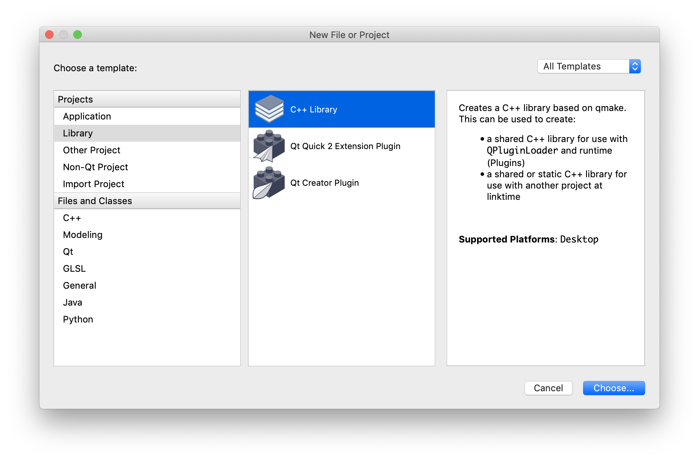

QMake
简介
qmake 是 Qt 附带的工具之一 。
qmake工具有助于简化跨不同平台的开发项目的构建过程。它自动生成Makefile，因此只需要几行信息就可以创建每个Makefile。您可以在任何软件项目中使用qmake，不管它是用 Qt 编写的还是不用 Qt 编写的。
如何使用 qmake?
特点
手写 Makefile 是比较困难而且容易出错，尤其在进行跨平台开发时必须针对不同平台分别撰写 Makefile，会增加跨平台开发复杂性与困难度。qmake 会根据专案文件（.pro）里面的信息自动生成适合平台的 Makefile。开发者能够自行撰写专案文件或是由 qmake 本身产生。qmake 包含额外的功能来方便 Qt 开发，如自动的包含 moc 和 uic 的编译规则。
Qt 的 Pro 文件如何编写？
快速入门
http://doc.qt.io/qt-5/qmake-tutorial.html
Getting Started
This tutorial teaches you the basics of qmake. The other topics in this manual contain more detailed information about using qmake. Starting Off Simple
Let's assume that you have just finished a basic implementation of your application, and you have created the following files:
hello.cpp
hello.h
main.cpp
You will find these files in the examples/qmake/tutorial directory of the Qt distribution. The only other thing you know about the setup of the application is that it's written in Qt. First, using your favorite plain text editor, create a file called hello.pro in examples/qmake/tutorial. The first thing you need to do is add the lines that tell qmake about the source and header files that are part of your development project.
We'll add the source files to the project file first. To do this you need to use the SOURCES variable. Just start a new line with SOURCES += and put hello.cpp after it. You should have something like this:
SOURCES += hello.cpp
We repeat this for each source file in the project, until we end up with the following:
SOURCES += hello.cpp
SOURCES += main.cpp
If you prefer to use a Make-like syntax, with all the files listed in one go you can use the newline escaping like this:
SOURCES = hello.cpp \
main.cpp
Now that the source files are listed in the project file, the header files must be added. These are added in exactly the same way as source files, except that the variable name we use is HEADERS.
Once you have done this, your project file should look something like this:
HEADERS += hello.h
SOURCES += hello.cpp
SOURCES += main.cpp
The target name is set automatically. It is the same as the project filename, but with the suffix appropriate for the platform. For example, if the project file is called hello.pro, the target will be hello.exe on Windows and hello on Unix. If you want to use a different name you can set it in the project file:
TARGET = helloworld
The finished project file should look like this:
HEADERS += hello.h
SOURCES += hello.cpp
SOURCES += main.cpp
You can now use qmake to generate a Makefile for your application. On the command line, in your project directory, type the following:
qmake -o Makefile hello.pro
Then type make or nmake depending on the compiler you use.
For Visual Studio users, qmake can also generate Visual Studio project files. For example:
qmake -tp vc hello.pro
Making an Application Debuggable
The release version of an application does not contain any debugging symbols or other debugging information. During development, it is useful to produce a debugging version of the application that has the relevant information. This is easily achieved by adding debug to the CONFIG variable in the project file.
For example:
CONFIG += debug
HEADERS += hello.h
SOURCES += hello.cpp
SOURCES += main.cpp
Use qmake as before to generate a Makefile. You will now obtain useful information about your application when running it in a debugging environment. Adding Platform-Specific Source Files
After a few hours of coding, you might have made a start on the platform-specific part of your application, and decided to keep the platform-dependent code separate. So you now have two new files to include into your project file: hellowin.cpp and hellounix.cpp. We cannot just add these to the SOURCES variable since that would place both files in the Makefile. So, what we need to do here is to use a scope which will be processed depending on which platform we are building for.
A simple scope that adds the platform-dependent file for Windows looks like this:
win32 {
SOURCES += hellowin.cpp
}
When building for Windows, qmake adds hellowin.cpp to the list of source files. When building for any other platform, qmake simply ignores it. Now all that is left to be done is to create a scope for the Unix-specific file.
When you have done that, your project file should look something like this:
CONFIG += debug
HEADERS += hello.h
SOURCES += hello.cpp
SOURCES += main.cpp
win32 {
SOURCES += hellowin.cpp
}
unix {
SOURCES += hellounix.cpp
}
Use qmake as before to generate a Makefile. Stopping qmake If a File Does Not Exist
You may not want to create a Makefile if a certain file does not exist. We can check if a file exists by using the exists() function. We can stop qmake from processing by using the error() function. This works in the same way as scopes do. Simply replace the scope condition with the function. A check for a file called main.cpp looks like this:
!exists( main.cpp ) {
error( "No main.cpp file found" )
}
The ! symbol is used to negate the test. That is, exists( main.cpp ) is true if the file exists, and !exists( main.cpp ) is true if the file does not exist.
CONFIG += debug
HEADERS += hello.h
SOURCES += hello.cpp
SOURCES += main.cpp
win32 {
SOURCES += hellowin.cpp
}
unix {
SOURCES += hellounix.cpp
}
!exists( main.cpp ) {
error( "No main.cpp file found" )
}
```pro
Use qmake as before to generate a makefile. If you rename main.cpp temporarily, you will see the message and qmake will stop processing.
Checking for More than One Condition
Suppose you use Windows and you want to be able to see statement output with qDebug() when you run your application on the command line. To see the output, you must build your application with the appropriate console setting. We can easily put console on the CONFIG line to include this setting in the Makefile on Windows. However, let's say that we only want to add the CONFIG line when we are running on Windows and when debug is already on the CONFIG line. This requires using two nested scopes. First create one scope, then create the other inside it. Put the settings to be processed inside the second scope, like this:
```pro
win32 {
debug {
CONFIG += console
}
}
Nested scopes can be joined together using colons, so the final project file looks like this:
CONFIG += debug
HEADERS += hello.h
SOURCES += hello.cpp
SOURCES += main.cpp
win32 {
SOURCES += hellowin.cpp
}
unix {
SOURCES += hellounix.cpp
}
!exists( main.cpp ) {
error( "No main.cpp file found" )
}
win32:debug {
CONFIG += console
}
That's it! You have now completed the tutorial for qmake, and are ready to write project files for your development projects.
qmake 教程介绍 这个教程可以教会你如何使用 qmake。我们建议你看完这个教程之后读一下 qmake 手册。
开始很简单 让我们假设你已经完成了你的应用程序的一个基本实现，并且你已经创建了下述文件：
hello.cpp
hello.h
main.cpp
你可以在 qt/qmake/example 中发现这些文件。你对这个应用程序的配置仅仅知道的另一件事是它是用 Qt 写的。首先，使用你所喜欢的纯文本编辑器，在 qt/qmake/tutorial 中创建一个叫做 hello.pro 的文件。你所要做的第一件事是添加一些行来告诉 qmake 关于你所开发的项目中的源文件和头文件这一部分。
我们先把源文件添加到项目文件中。为了做到这点，你需要使用 SOURCES 变量。只要用 SOURCES +=来开始一行，并且把 hello.cpp 放到它后面。你需要写成这样：
SOURCES += hello.cpp
我们对项目中的每一个源文件都这样做，直到结束：
SOURCES += hello.cpp
SOURCES += main.cpp
如果你喜欢使用像 Make 一样风格的语法，你也可以写成这样，一行写一个源文件，并用反斜线结尾，然后再起新的一行：
SOURCES = hello.cpp \
main.cpp
现在源文件已经被列到项目文件中了，头文件也必须添加。添加的方式和源文件一样，除了变量名是 HEADERS。
当你做完这些时，你的项目文件就像现在这样：
HEADERS += hello.h
SOURCES += hello.cpp
SOURCES += main.cpp
目标名称是自动设置的，它被设置为和项目文件一样的名称，但是为了适合平台所需要的后缀。举例来说，加入项目文件叫做“hello.pro”，在 Windows 上的目标名称应该是“hello.exe”，在 Unix 上应该是“hello”。如果你想设置一个不同的名字，你可以在项目文件中设置它：
TARGET = helloworld
最后一步是设置 CONFIG 变量。因为这是一个 Qt 应用程序，我们需要把“qt”放到 CONFIG 这一行中，这样 qmake 才会在连接的时候添加相关的库，并且保证 moc 和 uic 的连编行也被包含到 Makefile 中。
最终完成的项目文件应该是这样的：
CONFIG += qt
HEADERS += hello.h
SOURCES += hello.cpp
SOURCES += main.cpp
你现在可以使用 qmake 来为你的应用程序生成 Makefile。在你的应用程序目录中，在命令行下输入：
qmake -o Makefile hello.pro
然后根据你所使用的编译器输入 make 或者 nmake。
使应用程序可以调试 应用程序的发布版本不包含任何调试符号或者其它调试信息。在开发过程中，生成一个含有相关信息的应用程序的调试版本是很有用处的。通过在项目文件的 CONFIG 变量中添加“debug”就可以很简单地实现。
例如：
CONFIG += qt debug
HEADERS += hello.h
SOURCES += hello.cpp
SOURCES += main.cpp
像前面一样使用 qmake 来生成一个 Makefile 并且你就能够调试你的应用程序了。
添加特定平台的源文件 在编了几个小时的程序之后，你也许开始为你的应用程序编写与平台相关的部分，并且决定根据平台的不同编写不同的代码。所以现在你有两个信文件要包含到你的项目文件中－hello_win.cpp 和 hello_x11.cpp。我们不能仅仅把这两个文件放到 SOURCES 变量中，因为那样的话会把这两个文件都加到 Makefile 中。所以我们在这里需要做的是根据 qmake 所运行的平台来使用相应的作用域来进行处理。
为 Windows 平台添加的依赖平台的文件的简单的作用域看起来就像这样：
win32 {
SOURCES += hello_win.cpp
}
所以如果 qmake 运行在 Windows 上的时候，它就会把 hello_win.cpp 添加到源文件列表中。如果 qmake 运行在其它平台上的时候，它会很简单地把这部分忽略。现在接下来我们要做的就是添加一个 X11 依赖文件的作用域。
当你做完了这部分，你的项目文件应该和这样差不多：
CONFIG += qt debug
HEADERS += hello.h
SOURCES += hello.cpp
SOURCES += main.cpp
win32 {
SOURCES += hello_win.cpp
}
x11 {
SOURCES += hello_x11.cpp
}
像前面一样使用 qmake 来生成 Makefile。
如果一个文件不存在，停止 qmake 如果某一个文件不存在的时候，你也许不想生成一个 Makefile。我们可以通过使用 exists()函数来检查一个文件是否存在。我们可以通过使用 error()函数把正在运行的 qmake 停下来。这和作用域的工作方式一样。只要很简单地用这个函数来替换作用域条件。对 main.cpp 文件的检查就像这样：
!exists( main.cpp ) {
error( "No main.cpp file found" )
}
“!”用来否定这个测试，比如，如果文件存在，exists( main.cpp )是真，如果文件不存在，!exists( main.cpp )是真。
CONFIG += qt debug
HEADERS += hello.h
SOURCES += hello.cpp
SOURCES += main.cpp
win32 {
SOURCES += hello_win.cpp
}
x11 {
SOURCES += hello_x11.cpp
}
!exists( main.cpp ) {
error( "No main.cpp file found" )
}
像前面一样使用 qmake 来生成 Makefile。如果你临时改变 main.cpp 的名称，你会看到信息，并且 qmake 会停止处理。
检查多于一个的条件 假设你使用 Windows 并且当你在命令行运行你的应用程序的时候你想能够看到 qDebug()语句。除非你在连编你的程序的时候使用 console 设置，你不会看到输出。我们可以很容易地把 console 添加到 CONFIG 行中，这样在 Windows 下，Makefile 就会有这个设置。但是如果告诉你我们只是想在当我们的应用程序运行在 Windows 下并且当 debug 已经在 CONFIG 行中的时候，添加 console。这需要两个嵌套的作用域；只要生成一个作用域，然后在它里面再生成另一个。把设置放在最里面的作用域里，就像这样：
win32 {
debug {
CONFIG += console
}
}
嵌套的作用域可以使用冒号连接起来，所以最终的项目文件看起来像这样：
CONFIG += qt debug
HEADERS += hello.h
SOURCES += hello.cpp
SOURCES += main.cpp
win32 {
SOURCES += hello_win.cpp
}
x11 {
SOURCES += hello_x11.cpp
}
!exists( main.cpp ) {
error( "No main.cpp file found" )
}
win32:debug {
CONFIG += console
}
就这些了！你现在已经完成了 qmake 的教程，并且已经准备好为你的开发项目写项目文件了。
Pro 工程模板
模板文件，用于更明确的说明，编码用途
| Template | qmake Output |
|---|---|
| app | Makefile to build an application. |
| lib | Makefile to build a library. |
| vcapp | Visual Studio Project file to build an application. |
| vclib | Visual Studio Project file to build a library. |
| vcsubdirs | Visual Studio Solution file to build projects in sub-directories. |
具体详细部分：参照 doc.qt.io/qt-5/qmake-project-files.html
关于以 QT 为前缀的变量有
具体详细部分：参照 http://doc.qt.io/qt-5/qmake-variable-reference.html#qt
介绍 qmake qmake 是用来为不同的平台的开发项目创建 makefile 的 Trolltech 开发一个易于使用的工具。qmake 简化了 makefile 的生成，所以为了创建一个 makefile 只需要一个只有几行信息的文件。qmake 可以供任何一个软件项目使用，而不用管它是不是用 Qt 写的，尽管它包含了为支持 Qt 开发所拥有的额外的特征。
qmake 基于一个项目文件这样的信息来生成 makefile。项目文件可以由开发者生成。项目文件通常很简单，但是如果需要它是非常完善的。不用修改项目文件，qmake 也可以为为 Microsoft Visual Studio 生成项目。
qmake 的概念 QMAKESPEC 环境变量 举例来说，如果你在 Windows 下使用 Microsoft Visual Studio，然后你需要把 QMAKESPEC 环境变量设置为 win32-msvc。如果你在 Solaris 上使用 gcc，你需要把 QMAKESPEC 环境变量设置为 solaris-g++。
在 qt/mkspecs 中的每一个目录里面，都有一个包含了平台和编译器特定信息的 qmake.conf 文件。这些设置适用于你要使用 qmake 的任何项目，请不要修改它，除非你是一个专家。例如，假如你所有的应用程序都必须和一个特定的库连接，你可以把这个信息添加到相应的 qmake.conf 文件中。
项目(.pro)文件 一个项目文件是用来告诉 qmake 关于为这个应用程序创建 makefile 所需要的细节。例如，一个源文件和头文件的列表、任何应用程序特定配置、例如一个必需要连接的额外库、或者一个额外的包含路径，都应该放到项目文件中。
“#”注释 你可以为项目文件添加注释。注释由“#”符号开始，一直到这一行的结束。
模板 模板变量告诉 qmake 为这个应用程序生成哪种 makefile。下面是可供使用的选择：
app - 建立一个应用程序的 makefile。这是默认值，所以如果模板没有被指定，这个将被使用。
lib - 建立一个库的 makefile。
vcapp - 建立一个应用程序的 Visual Studio 项目文件。
vclib - 建立一个库的 Visual Studio 项目文件。
subdirs - 这是一个特殊的模板，它可以创建一个能够进入特定目录并且为一个项目文件生成 makefile 并且为它调用 make 的 makefile。
“app”模板 “app”模板告诉 qmake 为建立一个应用程序生成一个 makefile。当使用这个模板时，下面这些 qmake 系统变量是被承认的。你应该在你的.pro 文件中使用它们来为你的应用程序指定特定信息。
HEADERS - 应用程序中的所有头文件的列表。
SOURCES - 应用程序中的所有源文件的列表。
FORMS - 应用程序中的所有.ui 文件（由 Qt 设计器生成）的列表。
LEXSOURCES - 应用程序中的所有 lex 源文件的列表。
YACCSOURCES - 应用程序中的所有 yacc 源文件的列表。
TARGET - 可执行应用程序的名称。默认值为项目文件的名称。（如果需要扩展名，会被自动加上。）
DESTDIR - 放置可执行程序目标的目录。
DEFINES - 应用程序所需的额外的预处理程序定义的列表。
INCLUDEPATH - 应用程序所需的额外的包含路径的列表。
DEPENDPATH - 应用程序所依赖的搜索路径。
VPATH - 寻找补充文件的搜索路径。
DEF_FILE - 只有 Windows 需要：应用程序所要连接的.def 文件。
RC_FILE - 只有 Windows 需要：应用程序的资源文件。
RES_FILE - 只有 Windows 需要：应用程序所要连接的资源文件。
你只需要使用那些你已经有值的系统变量，例如，如果你不需要任何额外的 INCLUDEPATH，那么你就不需要指定它，qmake 会为所需的提供默认值。例如，一个实例项目文件也许就像这样：
TEMPLATE = app DESTDIR = c:\helloapp HEADERS += hello.h SOURCES += hello.cpp SOURCES += main.cpp DEFINES += QT_DLL CONFIG += qt warn_on release 如果条目是单值的，比如 template 或者目的目录，我们是用“=”，但如果是多值条目，我们使用“+=”来为这个类型添加现有的条目。使用“=”会用新值替换原有的值，例如，如果我们写了 DEFINES=QT_DLL，其它所有的定义都将被删除。
“lib”模板 “lib”模板告诉 qmake 为建立一个库而生成 makefile。当使用这个模板时，除了“app”模板中提到系统变量，还有一个 VERSION 是被支持的。你需要在为库指定特定信息的.pro 文件中使用它们。
VERSION - 目标库的版本号，比如，2.3.1。
“subdirs”模板 “subdirs”模板告诉 qmake 生成一个 makefile，它可以进入到特定子目录并为这个目录中的项目文件生成 makefile 并且为它调用 make。
在这个模板中只有一个系统变量 SUBDIRS 可以被识别。这个变量中包含了所要处理的含有项目文件的子目录的列表。这个项目文件的名称是和子目录同名的，这样 qmake 就可以发现它。例如，如果子目里是“myapp”，那么在这个目录中的项目文件应该被叫做 myapp.pro。
CONFIG 变量 配置变量指定了编译器所要使用的选项和所需要被连接的库。配置变量中可以添加任何东西，但只有下面这些选项可以被 qmake 识别。
下面这些选项控制着使用哪些编译器标志：
release - 应用程序将以 release 模式连编。如果“debug”被指定，它将被忽略。
debug - 应用程序将以 debug 模式连编。
warn_on - 编译器会输出尽可能多的警告信息。如果“warn_off”被指定，它将被忽略。
warn_off - 编译器会输出尽可能少的警告信息。
下面这些选项定义了所要连编的库/应用程序的类型：
qt - 应用程序是一个 Qt 应用程序，并且 Qt 库将会被连接。
thread - 应用程序是一个多线程应用程序。
x11 - 应用程序是一个 X11 应用程序或库。
windows - 只用于“app”模板：应用程序是一个 Windows 下的窗口应用程序。
console - 只用于“app”模板：应用程序是一个 Windows 下的控制台应用程序。
dll - 只用于“lib”模板：库是一个共享库（dll）。
staticlib - 只用于“lib”模板：库是一个静态库。
plugin - 只用于“lib”模板：库是一个插件，这将会使 dll 选项生效。
例如，如果你的应用程序使用 Qt 库，并且你想把它连编为一个可调试的多线程的应用程序，你的项目文件应该会有下面这行：
CONFIG += qt thread debug
注意，你必须使用“+=”，不要使用“=”，否则 qmake 就不能正确使用连编 Qt 的设置了，比如没法获得所编译的 Qt 库的类型了。
Qmake 高级概念
英文部分 http://doc.qt.io/qt-5/qmake-language.html qmake 高级概念 迄今为止，我们见到的 qmake 项目文件都非常简单，仅仅是一些 name = value 和 name += value 的列表行。qmake 提供了很多更强大的功能，比如你可以使用一个简单的项目文件来为多个平台生成 makefile。
操作符 到目前为止，你已经看到在项目文件中使用的=操作符和+=操作符。这里能够提供更多的可供使用的操作符，但是其中的一些需要谨慎地使用，因为它们也许会比你期待的改变的更多。
“=”操作符 这个操作符简单分配一个值给一个变量。使用方法如下：
TARGET = myapp
这将会设置 TARGET 变量为 myapp。这将会删除原来对 TARGET 的任何设置。
“+=”操作符 这个操作符将会向一个变量的值的列表中添加一个值。使用方法如下：
DEFINES += QT_DLL
这将会把 QT_DLL 添加到被放到 makefile 中的预处理定义的列表中。
“-=”操作符 这个操作符将会从一个变量的值的列表中移去一个值。使用方法如下：
DEFINES -= QT_DLL
这将会从被放到 makefile 中的预处理定义的列表中移去 QT_DLL。
“*=”操作符 这个操作符仅仅在一个值不存在于一个变量的值的列表中的时候，把它添加进去。使用方法如下：
DEFINES *= QT_DLL
只用在 QT_DLL 没有被定义在预处理定义的列表中时，它才会被添加进去。
“~=”操作符 这个操作符将会替换任何与指定的值的正则表达式匹配的任何值。使用方法如下：
DEFINES ~= s/QT_[DT].+/QT
这将会用 QT 来替代任何以 QT_D 或 QT_T 开头的变量中的 QT_D 或 QT_T。
作用域 作用域和“if”语句很相似，如果某个条件为真，作用域中的设置就会被处理。作用域使用方法如下：
win32 {
DEFINES += QT_DLL
}
上面的代码的作用是，如果在 Windows 平台上使用 qmake，QT_DLL 定义就会被添加到 makefile 中。如果在 Windows 平台以外的平台上使用 qmake，这个定义就会被忽略。你也可以使用 qmake 执行一个单行的条件/任务，就像这样：
win32:DEFINES += QT_DLL
比如，假设我们想在除了 Windows 平台意外的所有平台处理些什么。我们想这样使用作用域来达到这种否定效果：
!win32 {
DEFINES += QT_DLL
}
CONFIG 行中的任何条目也都是一个作用域。比如，你这样写：
CONFIG += warn_on
你将会得到一个称作“warn_on”的作用域。这样将会使在不丢失特定条件下可能所需的所有自定义设置的条件下，很容易地修改项目中的配置。因为你可能把你自己的值放到 CONFIG 行中，这将会为你的 makefile 而提供给你一个非常强大的配置工具。比如：
CONFIG += qt warn_on debug
debug {
TARGET = myappdebug
}
release {
TARGET = myapp
}
在上面的代码中，两个作用域被创建，它们依赖于 CONFIG 行中设置的是什么。在这个例子中，debug 在 CONFIG 行中，所以 TARGET 变量被设置为 myappdebug。如果 release 在 CONFIG 行中，那么 TARGET 变量将会被设置为 myapp。
当然也可以在处理一些设置之前检查两个事物。例如，如果你想检查平台是否是 Windows 并且线程设置是否被设定，你可以这样写：
win32 {
thread {
DEFINES += QT_THREAD_SUPPORT
}
}
为了避免写出许多嵌套作用域，你可以这样使用冒号来嵌套作用域：
win32:thread {
DEFINES += QT_THREAD_SUPPORT
}
一旦一个测试被执行，你也许也要做 else/elseif 操作。这种情况下，你可以很容易地写出复杂的测试。这需要使用特殊的“else”作用域，它可以和其它作用域进行组合（也可以向上面一样使用冒号），比如：
win32:thread {
DEFINES += QT_THREAD_SUPPORT
} else:debug {
DEFINES += QT_NOTHREAD_DEBUG
} else {
warning("Unknown configuration")
}
变量 到目前为止我们遇到的变量都是系统变量，比如 DEFINES、SOURCES 和 HEADERS。你也可以为你自己创建自己的变量，这样你就可以在作用域中使用它们了。创建自己的变量很容易，只要命名它并且分配一些东西给它。比如：
MY_VARIABLE = value
现在你对你自己的变量做什么是没有限制的，同样地，qmake 将会忽略它们，除非需要在一个作用域中考虑它们。
你也可以通过在其它任何一个变量的变量名前加$$来把这个变量的值分配给当前的变量。例如：
MY_DEFINES = $$DEFINES
现在 MY_DEFINES 变量包含了项目文件在这点时 DEFINES 变量的值。这也和下面的语句一样：
MY_DEFINES = $${DEFINES}
第二种方法允许你把一个变量和其它变量连接起来，而不用使用空格。qmake 将允许一个变量包含任何东西（包括$(VALUE)，可以直接在makefile中直接放置，并且允许它适当地扩张，通常是一个环境变量）。无论如何，如果你需要立即设置一个环境变量，然后你就可以使用$$()方法。比如：
MY_DEFINES = $$(ENV_DEFINES)
这将会设置 MY_DEFINES 为环境变量 ENV_DEFINES 传递给.pro 文件地值。另外你可以在替换的变量里调用内置函数。这些函数（不会和下一节中列举的测试函数混淆）列出如下：
join( variablename, glue, before, after ) 这将会在 variablename 的各个值中间加入 glue。如果这个变量的值为非空，那么就会在值的前面加一个前缀 before 和一个后缀 after。只有 variablename 是必须的字段，其它默认情况下为空串。如果你需要在 glue、before 或者 after 中使用空格的话，你必须提供它们。
member( variablename, position ) 这将会放置 variablename 的列表中的 position 位置的值。如果 variablename 不够长，这将会返回一个空串。variablename 是唯一必须的字段，如果没有指定位置，则默认为列表中的第一个值。
find( variablename, substr ) 这将会放置 variablename 中所有匹配 substr 的值。substr 也可以是正则表达式，而因此将被匹配。
MY_VAR = one two three four
MY_VAR2 = $$join(MY_VAR, " -L", -L) -Lfive
MY_VAR3 = $$member(MY_VAR, 2) $$find(MY_VAR, t.*)
MY_VAR2 将会包含“-Lone -Ltwo -Lthree -Lfour -Lfive”，并且 MYVAR3 将会包含“three two three”。
system( program_and_args ) 这将会返回程序执行在标准输出/标准错误输出的内容，并且正像平时所期待地分析它。比如你可以使用这个来询问有关平台的信息。
UNAME = $$system(uname -s)
contains( UNAME, [lL]inux ):message( This looks like Linux ($$UNAME) to me )
测试函数 qmake 提供了可以简单执行，但强大测试的内置函数。这些测试也可以用在作用域中（就像上面一样），在一些情况下，忽略它的测试值，它自己使用测试函数是很有用的。
contains( variablename, value ) 如果 value 存在于一个被叫做 variablename 的变量的值的列表中，那么这个作用域中的设置将会被处理。例如：
contains( CONFIG, thread ) {
DEFINES += QT_THREAD_SUPPORT
}
如果 thread 存在于 CONFIG 变量的值的列表中时，那么 QT_THREAD_SUPPORT 将会被加入到 DEFINES 变量的值的列表中。
count( variablename, number ) 如果 number 与一个被叫做 variablename 的变量的值的数量一致，那么这个作用域中的设置将会被处理。例如：
count( DEFINES, 5 ) {
CONFIG += debug
}
error( string ) 这个函数输出所给定的字符串，然后会使 qmake 退出。例如：
error( "An error has occured" )
文本“An error has occured”将会被显示在控制台上并且 qmake 将会退出。
exists( filename ) 如果指定文件存在，那么这个作用域中的设置将会被处理。例如：
exists( /local/qt/qmake/main.cpp ) {
SOURCES += main.cpp
}
如果/local/qt/qmake/main.cpp 存在，那么 main.cpp 将会被添加到源文件列表中。
注意可以不用考虑平台使用“/”作为目录的分隔符。
include( filename ) 项目文件在这一点时包含这个文件名的内容，所以指定文件中的任何设置都将会被处理。例如：
include( myotherapp.pro )
myotherapp.pro 项目文件中的任何设置现在都会被处理。
isEmpty( variablename ) 这和使用 count( variablename, 0 )是一样的。如果叫做 variablename 的变量没有任何元素，那么这个作用域中的设置将会被处理。例如：
isEmpty( CONFIG ) {
CONFIG += qt warn_on debug
}
message( string ) 这个函数只是简单地在控制台上输出消息。
message( "This is a message" )
文本“This is a message”被输出到控制台上并且对于项目文件的处理将会继续进行。
system( command ) 特定指令被执行并且如果它返回一个 1 的退出值，那么这个作用域中的设置将会被处理。例如：
system( ls /bin ) {
SOURCES += bin/main.cpp
HEADERS += bin/main.h
}
所以如果命令 ls /bin 返回 1，那么 bin/main.cpp 将被添加到源文件列表中并且 bin/main.h 将被添加到头文件列表中。
infile( filename, var, val ) 如果 filename 文件（当它被 qmake 自己解析时）包含一个值为 val 的变量 var，那么这个函数将会返回成功。你也可以不传递第三个参数（val），这时函数将只测试文件中是否分配有这样一个变量 var。
Qmake 变量大全
具体内容：doc.qt.io/qt-5/qmake-variable-reference.html#
Qmake 函数大全
参见：doc.qt.io/qt-5/qmake-function-reference.html
Qmake 测试函数
参见：doc.qt.io/qt-5/qmake-test-function-reference.html
Qmake 命令行
http://doc.qt.io/qt-5/qmake-running.html
Running qmake
The behavior of qmake can be customized when it is run by specifying various options on the command line. These allow the build process to be fine-tuned, provide useful diagnostic information, and can be used to specify the target platform for your project. Command Syntax
The syntax used to run qmake takes the following simple form:
qmake [mode][options] files
Operating Modes
qmake supports two different modes of operation. In the default mode, qmake uses the information in a project file to generate a Makefile, but it is also possible to use qmake to generate project files. If you want to explicitly set the mode, you must specify it before all other options. The mode can be either of the following two values:
-makefile
qmake output will be a Makefile.
-project
qmake output will be a project file.
Note: It is likely that the created file will need to be edited. For example, adding the QT variable to suit what modules are required for the project.
You can use the options to specify both general and mode-specific settings. Options that only apply to the Makefile mode are described in the Makefile Mode Options section, whereas options that influence the creation of project files are described in the Project Mode Options section. Files
The files argument represents a list of one or more project files, separated by spaces. General Options
A wide range of options can be specified on the command line to qmake in order to customize the build process, and to override default settings for your platform. The following basic options provide help on using qmake, specify where qmake writes the output file, and control the level of debugging information that will be written to the console:
-help
qmake will go over these features and give some useful help.
-o file
qmake output will be directed to file. If this option is not specified, qmake will try to use a suitable file name for its output, depending on the mode it is running in.
If '-' is specified, output is directed to stdout.
-d
qmake will output debugging information. Adding -d more than once increases verbosity.
The template used for the project is usually specified by the TEMPLATE variable in the project file. You can override or modify this by using the following options:
-t tmpl
qmake will override any set TEMPLATE variables with tmpl, but only after the .pro file has been processed.
-tp prefix
qmake will add prefix to the TEMPLATE variable.
The level of warning information can be fine-tuned to help you find problems in your project file:
-Wall
qmake will report all known warnings.
-Wnone
No warning information will be generated by qmake.
-Wparser
qmake will only generate parser warnings. This will alert you to common pitfalls and potential problems in the parsing of your project files.
-Wlogic
qmake will warn of common pitfalls and potential problems in your project file. For example, qmake will report multiple occurrences of files in lists and missing files.
Makefile Mode Options
qmake -makefile [options] files
In Makefile mode, qmake will generate a Makefile that is used to build the project. Additionally, the following options may be used in this mode to influence the way the project file is generated:
-after
qmake will process assignments given on the command line after the specified files.
-nocache
qmake will ignore the .qmake.cache file.
-nodepend
qmake will not generate any dependency information.
-cache file
qmake will use file as the cache file, ignoring any other .qmake.cache files found.
-spec spec
qmake will use spec as a path to platform and compiler information, and ignore the value of QMAKESPEC.
You may also pass qmake assignments on the command line. They are processed before all of the files specified. For example, the following command generates a Makefile from test.pro:
qmake -makefile -o Makefile "CONFIG+=test" test.pro
However, some of the specified options can be omitted as they are default values:
qmake "CONFIG+=test" test.pro
If you are certain you want your variables processed after the files specified, then you may pass the -after option. When this is specified, all assignments on the command line after the -after option will be postponed until after the specified files are parsed. Project Mode Options
qmake -project [options] files
In project mode, qmake will generate a project file. Additionally, you may supply the following options in this mode:
-r
qmake will look through supplied directories recursively.
-nopwd
qmake will not look in your current working directory for source code. It will only use the specified files.
In this mode, the files argument can be a list of files or directories. If a directory is specified, it will be included in the DEPENDPATH variable, and relevant code from there will be included in the generated project file. If a file is given, it will be appended to the correct variable, depending on its extension. For example, UI files are added to FORMS, and C++ files are added to SOURCES.
You may also pass assignments on the command line in this mode. When doing so, these assignments will be placed last in the generated project file.
Pro 示例 1
#-------------------------------------------------
#
# Project created by QtCreator 2013-05-20T13:22:23
#
#-------------------------------------------------
##
## Pre-defined global variables
##
CONFIG(debug, debug|release) {
DIR_SUFFIX = d
} else {
DIR_SUFFIX =
}
!contains(QMAKE_HOST.arch, x86_64) {
X64_BIN_DIR = ../../bin/x32$${DIR_SUFFIX} # Relative BIN path, 32-bit
X64_GEN_DIR = ../gui_build/out32$${DIR_SUFFIX} # QMake temporary generated files, placed inside the build folder. (OBJ, UI, MOC)
TARGET = x32gui # Build x32gui
} else {
X64_BIN_DIR = ../../bin/x64$${DIR_SUFFIX} # Relative BIN path, 64-bit
X64_GEN_DIR = ../gui_build/out64$${DIR_SUFFIX} # QMake temporary generated files, placed inside the build folder. (OBJ, UI, MOC)
TARGET = x64gui # Build x64gui
}
##
## QMake output directories
##
DESTDIR = $${X64_BIN_DIR}
OBJECTS_DIR = $${X64_GEN_DIR}
MOC_DIR = $${X64_GEN_DIR}
RCC_DIR = $${X64_GEN_DIR}
UI_DIR = $${X64_GEN_DIR}
##
## QT libraries
##
QT += core gui network
# QT5 requires widgets
greaterThan(QT_MAJOR_VERSION, 4): QT += widgets
##
## Build flags
##
# Generate debug symbols in release mode
QMAKE_CXXFLAGS_RELEASE += -Zi # Compiler
QMAKE_LFLAGS_RELEASE += /DEBUG # Linker
# Build as a library
DEFINES += BUILD_LIB NOMINMAX
TEMPLATE = lib
##
## Includes
##
INCLUDEPATH += \
../ \
Src \
Src/Gui \
Src/BasicView \
Src/Disassembler \
Src/Memory \
Src/Bridge \
Src/Global \
Src/Utils \
Src/ThirdPartyLibs/snowman \
Src/ThirdPartyLibs/ldconvert \
../zydis_wrapper \
../zydis_wrapper/zydis/include
# Resources, sources, headers, and forms
RESOURCES += \
resource.qrc
SOURCES += \
Src/main.cpp \
Src/Gui/MainWindow.cpp \
Src/Gui/CPUWidget.cpp \
Src/Gui/CommandLineEdit.cpp \
Src/BasicView/Disassembly.cpp \
Src/BasicView/HexDump.cpp \
Src/BasicView/AbstractTableView.cpp \
Src/Disassembler/QBeaEngine.cpp \
Src/Disassembler/ZydisTokenizer.cpp \
Src/Memory/MemoryPage.cpp \
Src/Bridge/Bridge.cpp \
Src/BasicView/StdTable.cpp \
Src/Gui/MemoryMapView.cpp \
Src/Gui/LogView.cpp \
Src/Gui/GotoDialog.cpp \
Src/Gui/WordEditDialog.cpp \
Src/Gui/CPUDisassembly.cpp \
Src/Gui/LineEditDialog.cpp \
Src/Gui/BreakpointsView.cpp \
Src/Utils/Breakpoints.cpp \
Src/Gui/CPUInfoBox.cpp \
Src/Gui/CPUDump.cpp \
Src/Gui/ScriptView.cpp \
Src/Gui/CPUStack.cpp \
Src/Gui/SymbolView.cpp \
Src/Gui/RegistersView.cpp \
Src/BasicView/SearchListView.cpp \
Src/BasicView/ReferenceView.cpp \
Src/Gui/ThreadView.cpp \
Src/Gui/SettingsDialog.cpp \
Src/Gui/ExceptionRangeDialog.cpp \
Src/Utils/RichTextPainter.cpp \
Src/Gui/TabBar.cpp \
Src/Gui/TabWidget.cpp \
Src/BasicView/HistoryLineEdit.cpp \
Src/Utils/Configuration.cpp \
Src/Gui/CPUSideBar.cpp \
Src/Gui/AppearanceDialog.cpp \
Src/Gui/CloseDialog.cpp \
Src/Gui/HexEditDialog.cpp \
Src/Gui/HexLineEdit.cpp \
Src/QHexEdit/ArrayCommand.cpp \
Src/QHexEdit/QHexEdit.cpp \
Src/QHexEdit/QHexEditPrivate.cpp \
Src/QHexEdit/XByteArray.cpp \
Src/Gui/PatchDialog.cpp \
Src/Gui/PatchDialogGroupSelector.cpp \
Src/Utils/UpdateChecker.cpp \
Src/Gui/CallStackView.cpp \
Src/Gui/ShortcutsDialog.cpp \
Src/BasicView/ShortcutEdit.cpp \
Src/Gui/CalculatorDialog.cpp \
Src/Gui/AttachDialog.cpp \
Src/Gui/PageMemoryRights.cpp \
Src/Gui/SelectFields.cpp \
Src/Gui/ReferenceManager.cpp \
Src/Bridge/BridgeResult.cpp \
Src/Gui/YaraRuleSelectionDialog.cpp \
Src/Gui/SourceViewerManager.cpp \
Src/Gui/SourceView.cpp \
Src/Utils/ValidateExpressionThread.cpp \
Src/Utils/MainWindowCloseThread.cpp \
Src/Gui/TimeWastedCounter.cpp \
Src/Utils/FlickerThread.cpp \
Src/QEntropyView/QEntropyView.cpp \
Src/Gui/EntropyDialog.cpp \
Src/Gui/NotesManager.cpp \
Src/Gui/NotepadView.cpp \
Src/Gui/CPUMultiDump.cpp \
Src/Gui/AssembleDialog.cpp \
Src/Utils/StringUtil.cpp \
Src/Gui/SEHChainView.cpp \
Src/Gui/EditBreakpointDialog.cpp \
Src/Gui/CPUArgumentWidget.cpp \
Src/Gui/HandlesView.cpp \
Src/Gui/EditFloatRegister.cpp \
Src/Utils/HexValidator.cpp \
Src/Utils/LongLongValidator.cpp \
Src/Utils/MiscUtil.cpp \
Src/Gui/XrefBrowseDialog.cpp \
Src/Gui/CodepageSelectionDialog.cpp \
Src/Gui/ColumnReorderDialog.cpp \
Src/Utils/EncodeMap.cpp \
Src/Utils/CodeFolding.cpp \
Src/Gui/WatchView.cpp \
Src/Gui/FavouriteTools.cpp \
Src/Gui/BrowseDialog.cpp \
Src/Gui/DisassemblerGraphView.cpp \
Src/Gui/DisassemblyPopup.cpp \
Src/Gui/VirtualModDialog.cpp \
Src/BasicView/LabeledSplitter.cpp \
Src/BasicView/LabeledSplitterDetachedWindow.cpp \
Src/Gui/LogStatusLabel.cpp \
Src/Gui/DebugStatusLabel.cpp \
Src/Utils/MenuBuilder.cpp \
Src/Gui/StructWidget.cpp \
Src/Gui/CustomizeMenuDialog.cpp \
Src/Gui/SimpleTraceDialog.cpp \
Src/Utils/MRUList.cpp \
Src/Gui/LocalVarsView.cpp \
Src/Gui/MessagesBreakpoints.cpp \
Src/Gui/AboutDialog.cpp \
Src/Gui/BreakpointMenu.cpp \
Src/Gui/ComboBoxDialog.cpp \
Src/Utils/SymbolAutoCompleteModel.cpp \
Src/Tracer/TraceBrowser.cpp \
Src/Tracer/TraceFileReader.cpp \
Src/Tracer/TraceFileSearch.cpp \
Src/Gui/MultiItemsSelectWindow.cpp \
Src/BasicView/AbstractStdTable.cpp \
Src/Gui/ZehSymbolTable.cpp \
Src/BasicView/StdSearchListView.cpp
HEADERS += \
Src/main.h \
Src/Gui/MainWindow.h \
Src/Gui/CPUWidget.h \
Src/Gui/CommandLineEdit.h \
Src/BasicView/Disassembly.h \
Src/BasicView/HexDump.h \
Src/BasicView/AbstractTableView.h \
Src/Disassembler/QBeaEngine.h \
Src/Disassembler/ZydisTokenizer.h \
Src/Memory/MemoryPage.h \
Src/Bridge/Bridge.h \
Src/Exports.h \
Src/Imports.h \
Src/BasicView/StdTable.h \
Src/Gui/MemoryMapView.h \
Src/Gui/LogView.h \
Src/Gui/GotoDialog.h \
Src/Gui/RegistersView.h \
Src/Gui/WordEditDialog.h \
Src/Gui/CPUDisassembly.h \
Src/Gui/LineEditDialog.h \
Src/Gui/BreakpointsView.h \
Src/Utils/Breakpoints.h \
Src/Gui/CPUInfoBox.h \
Src/Gui/CPUDump.h \
Src/Gui/ScriptView.h \
Src/Gui/CPUStack.h \
Src/Gui/SymbolView.h \
Src/BasicView/SearchListView.h \
Src/BasicView/ReferenceView.h \
Src/Gui/ThreadView.h \
Src/Gui/SettingsDialog.h \
Src/Gui/ExceptionRangeDialog.h \
Src/Utils/RichTextPainter.h \
Src/Gui/TabBar.h \
Src/Gui/TabWidget.h \
Src/BasicView/HistoryLineEdit.h \
Src/Utils/Configuration.h \
Src/Gui/CPUSideBar.h \
Src/Gui/AppearanceDialog.h \
Src/Gui/CloseDialog.h \
Src/Gui/HexEditDialog.h \
Src/Gui/HexLineEdit.h \
Src/QHexEdit/ArrayCommand.h \
Src/QHexEdit/QHexEdit.h \
Src/QHexEdit/QHexEditPrivate.h \
Src/QHexEdit/XByteArray.h \
Src/Gui/PatchDialog.h \
Src/Gui/PatchDialogGroupSelector.h \
Src/Utils/UpdateChecker.h \
Src/Gui/CallStackView.h \
Src/Gui/ShortcutsDialog.h \
Src/BasicView/ShortcutEdit.h \
Src/Gui/CalculatorDialog.h \
Src/Gui/AttachDialog.h \
Src/Gui/PageMemoryRights.h \
Src/Gui/SelectFields.h \
Src/Gui/ReferenceManager.h \
Src/Bridge/BridgeResult.h \
Src/Gui/YaraRuleSelectionDialog.h \
Src/Gui/SourceViewerManager.h \
Src/Gui/SourceView.h \
Src/Utils/StringUtil.h \
Src/Utils/ValidateExpressionThread.h \
Src/Utils/MainWindowCloseThread.h \
Src/Gui/TimeWastedCounter.h \
Src/Utils/FlickerThread.h \
Src/QEntropyView/Entropy.h \
Src/QEntropyView/QEntropyView.h \
Src/Gui/EntropyDialog.h \
Src/Gui/NotesManager.h \
Src/Gui/NotepadView.h \
Src/Utils/MenuBuilder.h \
Src/Gui/CPUMultiDump.h \
Src/Gui/AssembleDialog.h \
Src/Gui/SEHChainView.h \
Src/Gui/EditBreakpointDialog.h \
Src/Gui/CPUArgumentWidget.h \
Src/Gui/HandlesView.h \
Src/Gui/EditFloatRegister.h \
Src/Utils/HexValidator.h \
Src/Utils/LongLongValidator.h \
Src/Utils/MiscUtil.h \
Src/Gui/XrefBrowseDialog.h \
Src/Gui/CodepageSelectionDialog.h \
Src/Utils/CachedFontMetrics.h \
Src/Gui/ColumnReorderDialog.h \
Src/Utils/EncodeMap.h \
Src/Utils/CodeFolding.h \
Src/Gui/WatchView.h \
Src/Gui/FavouriteTools.h \
Src/Gui/BrowseDialog.h \
Src/Gui/DisassemblerGraphView.h \
Src/Utils/ActionHelpers.h \
Src/Gui/DisassemblyPopup.h \
Src/Gui/VirtualModDialog.h \
Src/BasicView/LabeledSplitter.h \
Src/BasicView/LabeledSplitterDetachedWindow.h \
Src/Gui/LogStatusLabel.h \
Src/Gui/DebugStatusLabel.h \
Src/Gui/CustomizeMenuDialog.h \
Src/Gui/StructWidget.h \
Src/Gui/SimpleTraceDialog.h \
Src/Utils/MRUList.h \
Src/Gui/LocalVarsView.h \
Src/Gui/MessagesBreakpoints.h \
Src/Gui/AboutDialog.h \
Src/Gui/BreakpointMenu.h \
Src/Gui/ComboBoxDialog.h \
Src/Utils/VaHistory.h \
Src/Utils/SymbolAutoCompleteModel.h \
Src/Tracer/TraceBrowser.h \
Src/Tracer/TraceFileReader.h \
Src/Tracer/TraceFileReaderInternal.h \
Src/Tracer/TraceFileSearch.h \
Src/Gui/MultiItemsSelectWindow.h \
Src/BasicView/AbstractStdTable.h \
Src/Gui/ZehSymbolTable.h \
Src/BasicView/AbstractSearchList.h \
Src/BasicView/StdSearchListView.h
FORMS += \
Src/Gui/MainWindow.ui \
Src/Gui/CPUWidget.ui \
Src/Gui/GotoDialog.ui \
Src/Gui/WordEditDialog.ui \
Src/Gui/LineEditDialog.ui \
Src/Gui/SymbolView.ui \
Src/Gui/SettingsDialog.ui \
Src/Gui/ExceptionRangeDialog.ui \
Src/Gui/AppearanceDialog.ui \
Src/Gui/CloseDialog.ui \
Src/Gui/HexEditDialog.ui \
Src/Gui/HexLineEdit.ui \
Src/Gui/PatchDialog.ui \
Src/Gui/PatchDialogGroupSelector.ui \
Src/Gui/ShortcutsDialog.ui \
Src/Gui/CalculatorDialog.ui \
Src/Gui/AttachDialog.ui \
Src/Gui/PageMemoryRights.ui \
Src/Gui/SelectFields.ui \
Src/Gui/YaraRuleSelectionDialog.ui \
Src/Gui/EntropyDialog.ui \
Src/Gui/AssembleDialog.ui \
Src/Gui/EditBreakpointDialog.ui \
Src/Gui/CPUArgumentWidget.ui \
Src/Gui/EditFloatRegister.ui \
Src/Gui/XrefBrowseDialog.ui \
Src/Gui/CodepageSelectionDialog.ui \
Src/Gui/ColumnReorderDialog.ui \
Src/Gui/FavouriteTools.ui \
Src/Gui/BrowseDialog.ui \
Src/Gui/VirtualModDialog.ui \
Src/Gui/CustomizeMenuDialog.ui \
Src/Gui/StructWidget.ui \
Src/Gui/SimpleTraceDialog.ui \
Src/Gui/MessagesBreakpoints.ui \
Src/Gui/AboutDialog.ui \
Src/Gui/ComboBoxDialog.ui
##
## Libraries
##
LIBS += -luser32 -ladvapi32 -lwinmm -lshell32
!contains(QMAKE_HOST.arch, x86_64) {
# Windows x86 (32bit) specific build
LIBS += -L"$$PWD/../zydis_wrapper/bin/x32$${DIR_SUFFIX}" -lzydis_wrapper
LIBS += -L"$$PWD/Src/ThirdPartyLibs/snowman" -lsnowman_x86
LIBS += -L"$$PWD/Src/ThirdPartyLibs/ldconvert" -lldconvert_x86
LIBS += -L"$${X64_BIN_DIR}" -lx32bridge
} else {
# Windows x64 (64bit) specific build
LIBS += -L"$$PWD/../zydis_wrapper/bin/x64$${DIR_SUFFIX}" -lzydis_wrapper
LIBS += -L"$$PWD/Src/ThirdPartyLibs/snowman" -lsnowman_x64
LIBS += -L"$$PWD/Src/ThirdPartyLibs/ldconvert" -lldconvert_x64
LIBS += -L"$${X64_BIN_DIR}" -lx64bridge
}
Pro 示例 2
static library
dynamic library
framework
创建 Plugin
MacOS 如何使用 Qt 创建静态库?
使用 Qt Creator 创建静态 library, 我们得到最初的pro文件
/code-src/for_mac/static_link_library/matrix/matrixref/matrixref.pro
#-------------------------------------------------
#
# Project created by QtCreator 2018-12-26T15:05:13
#
#-------------------------------------------------
# 仅依赖QtCore
QT -= gui
TARGET = matrixref
TEMPLATE = lib
CONFIG += staticlib
# The following define makes your compiler emit warnings if you use
# any feature of Qt which has been marked as deprecated (the exact warnings
# depend on your compiler). Please consult the documentation of the
# deprecated API in order to know how to port your code away from it.
DEFINES += QT_DEPRECATED_WARNINGS
# You can also make your code fail to compile if you use deprecated APIs.
# In order to do so, uncomment the following line.
# You can also select to disable deprecated APIs only up to a certain version of Qt.
#DEFINES += QT_DISABLE_DEPRECATED_BEFORE=0x060000 # disables all the APIs deprecated before Qt 6.0.0
SOURCES += \
matrixref.cpp
HEADERS += \
matrixref.h
unix {
target.path = /usr/lib
INSTALLS += target
}
使用 Qt Creator 创建一个控制台, 我们得到最初的pro文件
/code-src/for_mac/static_link_library/matrix/matrxref_console/matrxref_console.pro
QT -= gui
CONFIG += c++11 console
CONFIG -= app_bundle
# The following define makes your compiler emit warnings if you use
# any Qt feature that has been marked deprecated (the exact warnings
# depend on your compiler). Please consult the documentation of the
# deprecated API in order to know how to port your code away from it.
DEFINES += QT_DEPRECATED_WARNINGS
# You can also make your code fail to compile if it uses deprecated APIs.
# In order to do so, uncomment the following line.
# You can also select to disable deprecated APIs only up to a certain version of Qt.
#DEFINES += QT_DISABLE_DEPRECATED_BEFORE=0x060000 # disables all the APIs deprecated before Qt 6.0.0
SOURCES += \
main.cpp
# Default rules for deployment.
qnx: target.path = /tmp/$${TARGET}/bin
else: unix:!android: target.path = /opt/$${TARGET}/bin
!isEmpty(target.path): INSTALLS += target
修改 matrxref_console.pro 文件，增加外部库的引用说明
修改 /code-src/for_mac/static_link_library/matrix/matrxref_console/matrxref_console.pro 文件
增加如下代码：
# 使用外部库
macx{
LIBS += -L$$PWD/../build-matrixref-Desktop_Qt_5_12_0_clang_64bit2-Debug/ -lmatrixref
INCLUDEPATH += $$PWD/../matrixref
DEPENDPATH += $$PWD/../matrixref
PRE_TARGETDEPS += $$PWD/../build-matrixref-Desktop_Qt_5_12_0_clang_64bit2-Debug/libmatrixref.a
}
看看源码的调用
发现几个有意思的问题： （1）Mac 版本的静态库 matrixref 没有显示定义任何一个导出函数，不知道 Windows 版本上如何？
#if defined __cplusplus
#include <iostream>
#endif
#include <QCoreApplication>
#include "matrixref.h" // 引用静态库的头文件
int main(int argc, char *argv[])
{
QCoreApplication a(argc, argv);
TechiDaily::Matrixref ref;
#if defined __cplusplus
std::cout << ref.hi() << std::endl;
#endif
return a.exec();
}
MacOS 如何使用 Qt 创建动态库?
使用 Qt Creator 创建动态 library, 我们得到最初的pro文件

/code-src/for_mac/dynamic_link_library/linear/linearRef/linearRef.pro 文件内容
#-------------------------------------------------
#
# Project created by QtCreator 2018-12-27T08:58:42
#
#-------------------------------------------------
QT -= gui
TARGET = linearRef
TEMPLATE = lib
DEFINES += LINEARREF_LIBRARY
# The following define makes your compiler emit warnings if you use
# any feature of Qt which has been marked as deprecated (the exact warnings
# depend on your compiler). Please consult the documentation of the
# deprecated API in order to know how to port your code away from it.
DEFINES += QT_DEPRECATED_WARNINGS
# You can also make your code fail to compile if you use deprecated APIs.
# In order to do so, uncomment the following line.
# You can also select to disable deprecated APIs only up to a certain version of Qt.
#DEFINES += QT_DISABLE_DEPRECATED_BEFORE=0x060000 # disables all the APIs deprecated before Qt 6.0.0
SOURCES += \
linearref.cpp
HEADERS += \
linearref.h \
linearref_global.h
unix {
target.path = /usr/lib
INSTALLS += target
}
使用 Qt Creator 创建一个桌面应用, 我们得到最初的pro文件
查看 /code-src/for_mac/dynamic_link_library/linear/linearApp/linearApp.pro 文件内容
#-------------------------------------------------
#
# Project created by QtCreator 2018-12-27T09:06:42
#
#-------------------------------------------------
QT += core gui
greaterThan(QT_MAJOR_VERSION, 4): QT += widgets
TARGET = linearApp
TEMPLATE = app
# The following define makes your compiler emit warnings if you use
# any feature of Qt which has been marked as deprecated (the exact warnings
# depend on your compiler). Please consult the documentation of the
# deprecated API in order to know how to port your code away from it.
DEFINES += QT_DEPRECATED_WARNINGS
# You can also make your code fail to compile if you use deprecated APIs.
# In order to do so, uncomment the following line.
# You can also select to disable deprecated APIs only up to a certain version of Qt.
#DEFINES += QT_DISABLE_DEPRECATED_BEFORE=0x060000 # disables all the APIs deprecated before Qt 6.0.0
CONFIG += c++11
SOURCES += \
main.cpp \
mainwindow.cpp
HEADERS += \
mainwindow.h
FORMS += \
mainwindow.ui
# Default rules for deployment.
qnx: target.path = /tmp/$${TARGET}/bin
else: unix:!android: target.path = /opt/$${TARGET}/bin
!isEmpty(target.path): INSTALLS += target
加入引用动态库的代码
现在在观察一下/code-src/for_mac/dynamic_link_library/linear/linearApp/linearApp.pro 文件内容
#-------------------------------------------------
#
# Project created by QtCreator 2018-12-27T09:06:42
#
#-------------------------------------------------
QT += core gui
greaterThan(QT_MAJOR_VERSION, 4): QT += widgets
TARGET = linearApp
TEMPLATE = app
# The following define makes your compiler emit warnings if you use
# any feature of Qt which has been marked as deprecated (the exact warnings
# depend on your compiler). Please consult the documentation of the
# deprecated API in order to know how to port your code away from it.
DEFINES += QT_DEPRECATED_WARNINGS
# You can also make your code fail to compile if you use deprecated APIs.
# In order to do so, uncomment the following line.
# You can also select to disable deprecated APIs only up to a certain version of Qt.
#DEFINES += QT_DISABLE_DEPRECATED_BEFORE=0x060000 # disables all the APIs deprecated before Qt 6.0.0
CONFIG += c++11
SOURCES += \
main.cpp \
mainwindow.cpp
HEADERS += \
mainwindow.h
FORMS += \
mainwindow.ui
# 链接外部库
macx {
LIBS += -L$$PWD/../build-linearRef-Desktop_Qt_5_12_0_clang_64bit2-Debug/ -llinearRef.1.0.0
INCLUDEPATH += $$PWD/../linearRef
DEPENDPATH += $$PWD/../linearRef
}
# Default rules for deployment.
qnx: target.path = /tmp/$${TARGET}/bin
else: unix:!android: target.path = /opt/$${TARGET}/bin
!isEmpty(target.path): INSTALLS += target
现在查看代码的变化
code-src/for_mac/dynamic_link_library/linear/linearRef/linearref_global.h
#ifndef LINEARREF_GLOBAL_H
#define LINEARREF_GLOBAL_H
#include <QtCore/qglobal.h>
#if defined(LINEARREF_LIBRARY)
# define LINEARREFSHARED_EXPORT Q_DECL_EXPORT
#else
# define LINEARREFSHARED_EXPORT Q_DECL_IMPORT
#endif
#endif // LINEARREF_GLOBAL_H
注意：新建了 LINEARREFSHARED_EXPORT 宏
code-src/for_mac/dynamic_link_library/linear/linearRef/linearref.h
#ifndef LINEARREF_H
#define LINEARREF_H
#include "linearref_global.h"
namespace TechiDaily{
class LINEARREFSHARED_EXPORT LinearRef
{
public:
LinearRef();
const char* getName();
};
}
#endif // LINEARREF_H
MacOS 如何使用 Qt 创建 Framework?
Linux 如何使用 Qt 创建静态库?
使用Qt Creator 创建Windows 的静态库
查看 \code-src\for_win\static_link_library\printor\PrintorRef\PrintorRef.pro 文件内容
#-------------------------------------------------
#
# Project created by QtCreator 2018-12-27T14:06:49
#
#-------------------------------------------------
QT -= gui
TARGET = PrintorRef
TEMPLATE = lib
CONFIG += staticlib #静态库
# The following define makes your compiler emit warnings if you use
# any feature of Qt which has been marked as deprecated (the exact warnings
# depend on your compiler). Please consult the documentation of the
# deprecated API in order to know how to port your code away from it.
DEFINES += QT_DEPRECATED_WARNINGS
# You can also make your code fail to compile if you use deprecated APIs.
# In order to do so, uncomment the following line.
# You can also select to disable deprecated APIs only up to a certain version of Qt.
#DEFINES += QT_DISABLE_DEPRECATED_BEFORE=0x060000 # disables all the APIs deprecated before Qt 6.0.0
SOURCES += \
printorref.cpp
HEADERS += \
printorref.h
unix {
target.path = /usr/lib
INSTALLS += target
}
使用Qt Creator 创建Windows 桌面程序，引用静态库
查看 code-src\for_win\static_link_library\printor\PrintorCall\PrintorCall.pro
#-------------------------------------------------
#
# Project created by QtCreator 2018-12-27T14:16:32
#
#-------------------------------------------------
QT += core gui
greaterThan(QT_MAJOR_VERSION, 4): QT += widgets
TARGET = PrintorCall
TEMPLATE = app
# The following define makes your compiler emit warnings if you use
# any feature of Qt which has been marked as deprecated (the exact warnings
# depend on your compiler). Please consult the documentation of the
# deprecated API in order to know how to port your code away from it.
DEFINES += QT_DEPRECATED_WARNINGS
# You can also make your code fail to compile if you use deprecated APIs.
# In order to do so, uncomment the following line.
# You can also select to disable deprecated APIs only up to a certain version of Qt.
#DEFINES += QT_DISABLE_DEPRECATED_BEFORE=0x060000 # disables all the APIs deprecated before Qt 6.0.0
CONFIG += c++11
SOURCES += \
main.cpp \
mainwindow.cpp
HEADERS += \
mainwindow.h
FORMS += \
mainwindow.ui
# Default rules for deployment.
qnx: target.path = /tmp/$${TARGET}/bin
else: unix:!android: target.path = /opt/$${TARGET}/bin
!isEmpty(target.path): INSTALLS += target
可以使用下面的方式，添加静态库引用


最终，我们可以查看一下整理后的PrintorCall.pro文件内容
#-------------------------------------------------
#
# Project created by QtCreator 2018-12-27T14:16:32
#
#-------------------------------------------------
QT += core gui
greaterThan(QT_MAJOR_VERSION, 4): QT += widgets
TARGET = PrintorCall
TEMPLATE = app
# The following define makes your compiler emit warnings if you use
# any feature of Qt which has been marked as deprecated (the exact warnings
# depend on your compiler). Please consult the documentation of the
# deprecated API in order to know how to port your code away from it.
DEFINES += QT_DEPRECATED_WARNINGS
# You can also make your code fail to compile if you use deprecated APIs.
# In order to do so, uncomment the following line.
# You can also select to disable deprecated APIs only up to a certain version of Qt.
#DEFINES += QT_DISABLE_DEPRECATED_BEFORE=0x060000 # disables all the APIs deprecated before Qt 6.0.0
CONFIG += c++11
SOURCES += \
main.cpp \
mainwindow.cpp
HEADERS += \
mainwindow.h
FORMS += \
mainwindow.ui
# 引用静态库
win32: LIBS += -L$$PWD/../build-PrintorRef-Desktop_Qt_5_12_0_MinGW_64_bit-Debug/debug/ -lPrintorRef
INCLUDEPATH += $$PWD/../PrintorRef
DEPENDPATH += $$PWD/../PrintorRef
win32:!win32-g++: PRE_TARGETDEPS += $$PWD/../build-PrintorRef-Desktop_Qt_5_12_0_MinGW_64_bit-Debug/debug/PrintorRef.lib
else:win32-g++: PRE_TARGETDEPS += $$PWD/../build-PrintorRef-Desktop_Qt_5_12_0_MinGW_64_bit-Debug/debug/libPrintorRef.a
# Default rules for deployment.
qnx: target.path = /tmp/$${TARGET}/bin
else: unix:!android: target.path = /opt/$${TARGET}/bin
!isEmpty(target.path): INSTALLS += target
关键代码：
# 引用静态库
win32: LIBS += -L$$PWD/../build-PrintorRef-Desktop_Qt_5_12_0_MinGW_64_bit-Debug/debug/ -lPrintorRef
INCLUDEPATH += $$PWD/../PrintorRef
DEPENDPATH += $$PWD/../PrintorRef
win32:!win32-g++: PRE_TARGETDEPS += $$PWD/../build-PrintorRef-Desktop_Qt_5_12_0_MinGW_64_bit-Debug/debug/PrintorRef.lib
else:win32-g++: PRE_TARGETDEPS += $$PWD/../build-PrintorRef-Desktop_Qt_5_12_0_MinGW_64_bit-Debug/debug/libPrintorRef.a
下面，我们看一下静态库中的定义内容
printorref.h 文件
#ifndef PRINTORREF_H
#define PRINTORREF_H
namespace TechiDaily {
class PrintorRef
{
public:
PrintorRef();
const char* hi();
};
}
#endif // PRINTORREF_H
printorref.cpp 文件
#include "printorref.h"
namespace TechiDaily {
//![0]
PrintorRef::PrintorRef()
{
}
const char *PrintorRef::hi()
{
return "Hi! I'm PrintorRef";
}
//![0]
}
下面我们看一下调用者的代码
#if defined __cplusplus
#include <iostream>
#endif
#include "mainwindow.h"
#include "ui_mainwindow.h"
#include "printorref.h" // 引用第三方库
MainWindow::MainWindow(QWidget *parent) :
QMainWindow(parent),
ui(new Ui::MainWindow)
{
ui->setupUi(this);
}
MainWindow::~MainWindow()
{
delete ui;
}
void MainWindow::on_testBtn_clicked()
{
TechiDaily::PrintorRef ref;
#if defined __cplusplus
std::cout << ref.hi() << std::endl;
#endif
}
(Windows)创建动态库?
使用Qt Creator 创建Windows 的动态库
查看 code-src\for_win\dynamic_link_library\ExtendBest\ExtendBestRef\ExtendBestRef.pro 文件内容
#-------------------------------------------------
#
# Project created by QtCreator 2018-12-27T15:36:51
#
#-------------------------------------------------
QT -= gui
TARGET = ExtendBestRef
TEMPLATE = lib
DEFINES += EXTENDBESTREF_LIBRARY
# The following define makes your compiler emit warnings if you use
# any feature of Qt which has been marked as deprecated (the exact warnings
# depend on your compiler). Please consult the documentation of the
# deprecated API in order to know how to port your code away from it.
DEFINES += QT_DEPRECATED_WARNINGS
# You can also make your code fail to compile if you use deprecated APIs.
# In order to do so, uncomment the following line.
# You can also select to disable deprecated APIs only up to a certain version of Qt.
#DEFINES += QT_DISABLE_DEPRECATED_BEFORE=0x060000 # disables all the APIs deprecated before Qt 6.0.0
SOURCES += \
extendbestref.cpp
HEADERS += \
extendbestref.h \
extendbestref_global.h
unix {
target.path = /usr/lib
INSTALLS += target
}
动态库源码部分
-
extendbestref_global.h#ifndef EXTENDBESTREF_GLOBAL_H #define EXTENDBESTREF_GLOBAL_H #include <QtCore/qglobal.h> #if defined(EXTENDBESTREF_LIBRARY) # define EXTENDBESTREFSHARED_EXPORT Q_DECL_EXPORT #else # define EXTENDBESTREFSHARED_EXPORT Q_DECL_IMPORT #endif #endif // EXTENDBESTREF_GLOBAL_H -
extendbestref.h#ifndef EXTENDBESTREF_H #define EXTENDBESTREF_H #include "extendbestref_global.h" namespace TechiDaily { class EXTENDBESTREFSHARED_EXPORT ExtendBestRef { public: ExtendBestRef(); const char* hi(); }; } #endif // EXTENDBESTREF_H -
extendbestref.cpp
#include "extendbestref.h"
namespace TechiDaily {
ExtendBestRef::ExtendBestRef()
{
}
const char* ExtendBestRef::hi()
{
return "I'm ExtendBest Ref";
}
}
使用Qt Creator 创建Windows 动态库引用程序
#-------------------------------------------------
#
# Project created by QtCreator 2018-12-27T15:48:51
#
#-------------------------------------------------
QT += core gui
greaterThan(QT_MAJOR_VERSION, 4): QT += widgets
TARGET = ExtendBestCall
TEMPLATE = app
# The following define makes your compiler emit warnings if you use
# any feature of Qt which has been marked as deprecated (the exact warnings
# depend on your compiler). Please consult the documentation of the
# deprecated API in order to know how to port your code away from it.
DEFINES += QT_DEPRECATED_WARNINGS
# You can also make your code fail to compile if you use deprecated APIs.
# In order to do so, uncomment the following line.
# You can also select to disable deprecated APIs only up to a certain version of Qt.
#DEFINES += QT_DISABLE_DEPRECATED_BEFORE=0x060000 # disables all the APIs deprecated before Qt 6.0.0
CONFIG += c++11
SOURCES += \
main.cpp \
mainwindow.cpp
HEADERS += \
mainwindow.h
FORMS += \
mainwindow.ui
# Default rules for deployment.
qnx: target.path = /tmp/$${TARGET}/bin
else: unix:!android: target.path = /opt/$${TARGET}/bin
!isEmpty(target.path): INSTALLS += target
添加引用库的方式
# 添加第三方库
win32:CONFIG(release, debug|release): LIBS += -L$$PWD/../build-ExtendBestRef-Desktop_Qt_5_12_0_MinGW_64_bit-Debug/release/ -lExtendBestRef
else:win32:CONFIG(debug, debug|release): LIBS += -L$$PWD/../build-ExtendBestRef-Desktop_Qt_5_12_0_MinGW_64_bit-Debug/debug/ -lExtendBestRef
INCLUDEPATH += $$PWD/../ExtendBestRef
DEPENDPATH += $$PWD/../ExtendBestRef
INCLUDEPATH += $$PWD/../ExtendBestRef
DEPENDPATH += $$PWD/../ExtendBestRef
看一下，代码中如何调用
#if defined __cplusplus
#include <iostream>
#endif
#include "mainwindow.h"
#include "ui_mainwindow.h"
#include "extendbestref.h" // 引用第三方库
MainWindow::MainWindow(QWidget *parent) :
QMainWindow(parent),
ui(new Ui::MainWindow)
{
ui->setupUi(this);
}
MainWindow::~MainWindow()
{
delete ui;
}
void MainWindow::on_testBtn_clicked()
{
TechiDaily::ExtendBestRef ref;
#if defined __cplusplus
std::cout << ref.hi() << std::endl;
#endif
}
运行的时候，需要将依赖库的dll文件，存放到可执行文件相同目录中
(Linux)创建静态库?
(Linux)创建动态库?
Qt 库依赖如何导出
Qt 库的用途
参照 http://doc.qt.io/qt-5/qtmodules.html
主要模块
| 模块名称 | 描述 | 备注 |
|---|---|---|
| Qt Core | Core non-graphical classes used by other modules. | Qt 基础 |
| Qt GUI | Base classes for graphical user interface (GUI) components. Includes OpenGL. | Qt GUI 库 |
| Qt Widgets | Classes to extend Qt GUI with C++ widgets. | Qt 小部件 |
| Qt Multimedia | Classes for audio, video, radio and camera functionality. | Qt 多媒体库 |
| Qt Multimedia Widgets | Widget-based classes for implementing multimedia functionality. | Qt 多媒体部件库 |
| Qt Network | Classes to make network programming easier and more portable. | Qt 的网络库 |
| Qt QML | Classes for QML and JavaScript languages. | Qt QML 库 |
| Qt Quick | A declarative framework for building highly dynamic applications with custom user interfaces. | Qt 声明式 GUI |
| Qt Quick Controls | Provides lightweight QML types for creating performant user interfaces for desktop, embedded, and mobile devices. These types employ a simple styling architecture and are very efficient. | Qt QML 控件 |
| Qt Quick Dialogs | Types for creating and interacting with system dialogs from a Qt Quick application. | Qt QML 调用系统窗口 |
| Qt Quick Layouts | Layouts are items that are used to arrange Qt Quick 2 based items in the user interface. | Qt QML 布局 |
| Qt Quick Test | A unit test framework for QML applications, where the test cases are written as JavaScript functions. Note: The binary compatibility guarantee does not apply to Qt Quick Test. However, it will remain source compatible. | Qt QML 测试架构 |
| Qt SQL | Classes for database integration using SQL. | Qt SQL 接口 |
| Qt Test | Classes for unit testing Qt applications and libraries. Note: The binary compatibility guarantee does not apply to Qt Test. However, it will remain source compatible. | Qt Test 架构 |
Qt 附加 Add-Ons
Qt 附加的库比较多。具体参见：http://doc.qt.io/qt-5/qtmodules.html
Qt 插件的用途
Qt Windows 开发，导出依赖
Qt Linux 开发，导出依赖
Qt Mac 开发，导出依赖
Qt 制作安装包
Qt Windows 安装包制作
Qt Mac 安装包制作
Qt Mac 安装包制作
Qt 产品提交到应用商店
Windows 应用商店
苹果 MacOS 应用 商店
Windows平台技巧
如何加载动态库？
Windows平台使用三个基本的函数可以加载动态库
先看源码 WinBase.h 文件：
WINBASEAPI
__out_opt
HMODULE
WINAPI
LoadLibraryA(
__in LPCSTR lpLibFileName
);
WINBASEAPI
__out_opt
HMODULE
WINAPI
LoadLibraryW(
__in LPCWSTR lpLibFileName
);
#ifdef UNICODE
#define LoadLibrary LoadLibraryW
#else
#define LoadLibrary LoadLibraryA
#endif // !UNICODE
Windows加载动态库的搜索路径问题
官方搜索路径
- The directory from which the application loaded. （应用程序所在的目录）
- The system directory. Use the GetSystemDirectory function to get the path of this directory. （system32目录）
- The 16-bit system directory. There is no function that obtains the path of this directory, but it is searched. （System目录）
- The Windows directory. Use the GetWindowsDirectory function to get the path of this directory. （Windows目录）
- The current directory. （运行中的当前目录）
- The directories that are listed in the PATH environment variable. Note that this does not include the per-application path specified by the App Paths registry key. （PATH 路径）
简单总结一下简要的dll的加载顺序
- (1)EXE所在目录；
- (2)当前目录GetCurrentDirectory()；
- (3)系统目录GetSystemDirectory()；
- (4)WINDOWS目录GetWindowsDirectory()；
- (5)环境变量 PATH 所包含的目录。
所以使用loadlibrary加载dll使用的路径，但是这个函数会忽略这个路径，只会按既定规则加载dll。所以如果要加载指定目录的dll，可以用上述两个解决方案。
LoadLibrary 与 LoadLibraryW 与 LoadLibraryA 的区别
先看源码 WinBase.h 文件：
WINBASEAPI
__out_opt
HMODULE
WINAPI
LoadLibraryA(
__in LPCSTR lpLibFileName
);
WINBASEAPI
__out_opt
HMODULE
WINAPI
LoadLibraryW(
__in LPCWSTR lpLibFileName
);
#ifdef UNICODE
#define LoadLibrary LoadLibraryW
#else
#define LoadLibrary LoadLibraryA
#endif // !UNICODE
说明：
- （1）LoadLibrary 是动态来区分UNICODE和ANSI编码的动态库的
- （2）LoadLibraryA 是加载ANSI编码动态库的
- （3）LoadLibraryW 是加载UNICODE编码动态库的
加载动态库出错的错误编码，原因有哪些？
想知道加载动态库出现什么问题，可以先获得错误代码.
通过 GetLastError() 函数获取最后出错的代码编码
DWORD dwError = 0;
hInstance = LoadLibrary(strDllName);
if(hInstance == NULL)
{
dwError = GetLastError();
return NULL;
}
出现问题的错误编码及解析
- 错误代码126：
TCHAR 转换成const char*
Qt Core
- 宏 Q_OBJECT, 应用到所有继承 QObject 的类
- 使用宏 Q_OBJECT, 类必须继承 QObject 或 QObject 子类
- 添加类 ClassInfo 信息
- 获取类 ClassInfo 信息
- 类 Property 属性读写封装
- QObject 对象动态增加属性
- incomplete return type 'QMetaClassInfo'
- incomplete return type 'QMetaProperty'
- QObject 对象指针类型的动态转换 qobject_cast<>
- QObject 对象枚举类型封装
- QObject 子类不支持模类定义板泛型
- 多继承 QObject 必须放在前面
- 虚拟继承 QObject 不支持
- 嵌套类中的类不能有信号和槽机制
- 嵌套 QObject 子类中的类不能使用宏 Q_OBJECT
- 函数指针不能作为信号和槽的参数
- 信号和槽中的枚举参数，必须是完全限定
- 信号和槽被激活的次序说明
所有继承 QObject 的类，建议对使用 Q_OBJECT 宏
原文：
While it is possible to use
QObjectas a base class without theQ_OBJECTmacro and without meta-object code, neither signals and slots nor the other features described here will be available if theQ_OBJECTmacro is not used. From the meta-object system's point of view, a QObject subclass without meta code is equivalent to its closest ancestor with meta-object code. This means for example, thatQMetaObject::className()will not return the actual name of your class, but the class name of this ancestor.
Therefore, we strongly recommend that all subclasses of QObject use the Q_OBJECT macro regardless of whether or not they actually use signals, slots, and properties.
说明：所有继承 QObject 的类，建议对使用 Q_OBJECT 宏。 如果不使用Q_OBJECT宏，那么子类所有的关于信号、槽、属性等等特性全部不可用。
使用宏 Q_OBJECT, 类必须继承 QObject 或 QObject 子类
// Error: Class contains Q_OBJECT macro but does not inherit from QObject
class CustomObject {
Q_OBJECT // Error: Class contains Q_OBJECT macro but does not inherit from QObject
public:
explicit CustomObject();
~CustomObject();
};
宏 QT_VERSION 与 QT_VERSION_CHECK 如何使用?
添加更多的类信息
使用Q_CLASSINFO()宏给类添加更多的关于类的信息，只支持 key-value 方式
Another macro,
Q_CLASSINFO(), allows you to attach additional name/value pairs to the class's meta-object
示例：
class MyClass : public QObject
{
Q_OBJECT
Q_CLASSINFO("Author", "Oscar Peterson")
Q_CLASSINFO("Status", "Active")
public:
MyClass(QObject *parent = 0);
~MyClass();
};
获取类 ClassInfo 信息
调用文件要加入如下代码
#include <QMetaClassInfo>
获取 QMetaClassInfo 的信息
const QMetaObject* metaObject = this->metaObject();
std::cout << "metaObject->className() = " << metaObject->className() << std::endl;
std::cout << "metaObj->classInfo : = " << std::endl;
for(int i = metaObject->classInfoOffset(); i < metaObject->classInfoCount(); ++i) {
std::cout << metaObject->classInfo(i).name() << std::endl;
}
std::cout << "----------------------" << std::endl;
Qt 类 Property 属性读写封装
简介
Qt 提供一个复杂属性系统，类似于其它编译器供应商所提供的（Property System）。然而，作为一个与编译器和平台无关的库，Qt 不依赖于那些非标准的编译器特性，如：_property 或[property]。Qt 的解决方案适用于 Qt 支持平台下的任何标准 C++编译器。它基于元对象系统（Meta Object Sytstem），也通过信号和槽提供对象间通讯机制。
Qt 的属性系统为 Qt 的类添加了更加实惠的功能。有助于 Qt 对象状态变化，变化通知、封装等等操作。
声明属性的要求
为了声明一个属性，在继承 QObject 的类中使用 Q_PROPERTY()宏.
Q_PROPERTY(type name
(READ getFunction [WRITE setFunction] |
MEMBER memberName [(READ getFunction | WRITE setFunction)])
[RESET resetFunction]
[NOTIFY notifySignal]
[REVISION int]
[DESIGNABLE bool]
[SCRIPTABLE bool]
[STORED bool]
[USER bool]
[CONSTANT]
[FINAL])
Here are some typical examples of property declarations taken from class QWidget. 以下是摘自 QWidget 类的典型属性声明的例子：
Q_PROPERTY(bool focus READ hasFocus)
Q_PROPERTY(bool enabled READ isEnabled WRITE setEnabled)
Q_PROPERTY(QCursor cursor READ cursor WRITE setCursor RESET unsetCursor)
下面的示例，展示了如何使用 MEMBER 关键字将类成员变量导出为 Qt 属性。注意：必须被指定一个 NOTIFY 信号以允许 QML 属性绑定。
Q_PROPERTY(QColor color MEMBER m_color NOTIFY colorChanged)
Q_PROPERTY(qreal spacing MEMBER m_spacing NOTIFY spacingChanged)
Q_PROPERTY(QString text MEMBER m_text NOTIFY textChanged)
...
signals:
void colorChanged();
void spacingChanged();
void textChanged(const QString &newText);
private:
QColor m_color;
qreal m_spacing;
QString m_text;
一个属性的行为就像一个类的数据成员，但它有通过元对象系统访问的附加特性。
- 如果没有指定
MEMBER关键字，则需要一个READ访问函数。用于读取属性值。理想的情况下，一个 const 函数用于此目的，并且它必须返回属性类型或类型的 const 引用。如：QWidget::focus是一个只读属性，通过READ函数QWidget::hasFocus()访问。 - 一个
WRITE访问函数是可选的，用于设置属性值。它必须返回void并且必须接受一个参数，该参数是属性类型，或此类型的指针，引用，例如：QWidget::enabled具有WRITE函数QWidget::setEnabled()。只读属性不需要WRITE函数，例如：QWidget::focus没有WRITE函数 - 如果
READ访问函数没有被指定，则MEMBER变量关联是必须的。这使得给定的成员变量可读可写，而不需要创建READ和WRITE访问函数。如果需要控制变量访问，除了使用MEMBER变量关联外，仍然可以使用READ和WRITE函数（但不要同时使用） - 一个
RESET函数是可选的，用于将属性设置为上下文指定的默认值。例如：QWidget::cursor有典型的READ和WRITE函数，QWidget::cursor()和QWidget::setCursor()，同时也有一个RESET函数QWidget::unsetCursor()，因为没有QWidget::setCursor()调用将cursor属性重置为上下文默认的值。RESET函数必须返回void类型，并且不带任何参数。 - 一个
NOTIFY信号是可选的。如果定义了NOTIFY，则需要在类中指定一个已存在的信号，该信号在属性值改变时发射。MEMBER变量的NOTIFY信号必须是 0 个或一个参数，而且必须与属性的类型相同。参数保存的是属性的新值。NOTIFY信号应该仅当属性值真正的发生变化时发射，以避免绑定在QML不必要的重新评估。例如：当需要一个没有显式setter的MEMBER属性时，Qt 会自动发射信号。 - 一个
REVISION数字是可选的。如果包含了该关键字，它定义了在 API 特定修订中使用的属性和通知器信号（通常是 QML）；如果没有包含，它默认为0。 DESIGNABLE属性指定了该属性在 GUI 设计器（如Qt Designer）的属性编辑器中是否可见。大多数的属性是DESIGNABLE（默认为 true）。除了 true 或 false，还可以指定 boolean 成员函数。SCRIPTABLE属性表明这个属性是否可以被一个脚本引擎操作（默认是 true）。除了 true 或 false，你还可以指定 boolean 成员函数。STORED属性表明了该属性是否被认为是自己已存在的或是依赖于其它值。它也表明在保存对象状态时，是否必须保存此属性的值。大多数属性是 STORED（默认为 true）。但是例如：QWidget::minmunWidth()的STROED为 false，因为它的值从QWidget::minimumSize()（类型为QSize）中的宽度部分取得。USER属性指定了在类中属性是否被设计为面向用户或可编辑的。通常情况下，每一个类只有一个USER属性（默认为 false）。例如：QAbstractButton::checked是按钮的用户可编辑属性（checkable）。注意：QItemDelegate获取和设置widget的USER属性。CONSTANT属性的存在表明属性是一个常量值。对于给定的 object 实例，常量属性的READ函数在每次被调用时必须返回相同的值。不同的 object 实例该常量值可能会不同。一个常量属性不能具有WRITE函数或NOYIFY信号。FINAL属性的存在表明属性不能被派生类所重写。在有些情况下，这可以用于效率优化，但不能被 moc 强制执行。必须注意不能重写一个FINAL属性。READ,WRITE,RESET函数能被继承，也能是virtual的。当多重继承时，它们必须来自第一个继承的类。
属性类型可以是 QVariant 支持的任意类型，或者是用户定义的类型。在这个例子中，类 QDate 被看作是一个用户定义的类型。
Q_PROPERTY(QDate date READ getDate WRITE setDate)
因为 QDate 是用户自定义的，必须包含有属性声明的头文件。
由于历史原因，QMap 和 QList 作为属性类型等同于 QVarinatMap 和 QVarintList.
For historical reasons, QMap and QList as property types are synonym of QVariantMap and QVariantList.
对于 QMap、QList 和 QValueList 属性，属性的值是一个 QVariant，它包含整个 list 或 map。
注意：Q_PROPERTY 字符串不能包含逗号，因为逗号会分割宏的参数。因此，你必须使用 QVarinatMap 作为属性的类型而不是 QMap
通过元对象系统读写属性
一个属性可以使用通用函数 QObject::property()和 QObject::setProperty()进行读写，除了属性名，无需知晓属性所属类的任何细节。
下面的代码片断中，调用 QAbstractButton::setDown()和 QObject::setProperty()来设置属性“down”。
QPushButton *button = new QPushButton;
QObject *object = button;
button->setDown(true);
object->setProperty("down", true);
优化建议： 通过属性的
WRITE访问属性优于上述两者，因为速度更快并且在编译期间有更好的诊断。 但以这种方式设置属性你需要在编译期间了解这个类（能够访问其定义）。
通过名称访问属性，能够让你在编译期间访问不了解的类。你可以在运行时期通过 QObject、QMetaObject 和 QMetaProperties 查询类属性。
QObject *object = ...
const QMetaObject *metaobject = object->metaObject();
int count = metaobject->propertyCount();
for (int i=0; i<count; ++i) {
QMetaProperty metaproperty = metaobject->property(i);
const char *name = metaproperty.name();
QVariant value = object->property(name);
...
}
上面的代码片段中，QMetaObject::property()用于获取在未知类中定义的每个属性的 metadata。
从 metadata 中获取属性名，并传递给 QObject::property()来获取当前对象的属性值。
一个简单的例子
假设我们有一个类 MyClass，它从 QObject 派生并且在其 private 区域使用了 Q_OBJECT 宏。
我们想在 MyClass 类中声明一个属性去保持一个 priority 值的追踪。
属性名为 priority，它是在 MyClass 中定义的 Priority 枚举类型。
我们在类的 private 区域使用 Q_PROPERTY()来声明属性。
READ 函数名为 priority，并且包含一个名为 setPriority 的 WRITE 函数。
枚举类型必须使用 Q_ENUM()宏注册到元对象系统中。
注册一个枚举类型使得枚举器名可以在调用 QObject::setProperty()时使用。
我们还必须为 READ 和 WRITE 函数提供我们自己的声明。
MyClass 的声明看起来如下：
class MyClass : public QObject
{
Q_PROPERTY(Priority priority READ priority WRITE setPriority NOTIFY priorityChanged)
public:
MyClass(QObject *parent = nullptr);
~MyClass();
enum Priority
{
High,
Low,
VeryHigh,
VeryLow
};
Q_ENUM(Priority)
void setPriority(Priority priority) {
m_priority = priority;
emit priorityChanged(priority);
}
Priority priority() const { return m_priority; }
signals:
void priorityChanged(Priority);
private:
Q_OBJECT
Priority m_priority;
};
READ 函数是 const 的并返回属性类型。WRITE 函数返回 void 并有一个属性类型的参数。元对象编译器强制做这些事情。
给定一个指向 MyClass 实例的指针，或一个指向 QObject 的指针（该指针是 MyClass 的实例），有两种方式设置 priority 属性：
MyClass *myinstance = new MyClass;
QObject *object = myinstance;
myinstance->setPriority(MyClass::VeryHigh);
object->setProperty("priority", "VeryHigh");
在此例子中，声明在 MyClass 中的枚举类型是属性的类型，并使用 Q_ENUM()宏注册在元对象系统中。这使得枚举值可以在调用 setProperty()时做为字符串使用。如果枚举类型在其它类中声明，那么需要使用枚举的全名（如：OtherClass::Priority)，且此类也必须从 QObject 派生，且使用 Q_ENUM()宏注册枚举类型。
像 Q_ENUMS()宏一样，类似的宏 Q_FLAG()也是可用的，它注册一个枚举类型，但是它把枚举类型作为一个 flags 集合，也就是，值可以用 OR 操作来合并。
一个 I/O 类可能具有枚举值 Read 和 Write 并且 QObject::setProperty()可以接受 Read | Write。应使用 Q_FLAGS()来注册此枚举类型。
动态属性
QObject::setProperty()也可以用来在运行时期向一个类的实例添加新的属性。
- 当使用一个名称和值调用此函数时，如果
QObject中一个给定名称的属性已存在，并且如果给定的值与属性的类型兼容，则值就存储到属性中，并返回 true。如果值与属性类型不兼容，属性值则不会改变，并返回 false。 - 但是如果 QObject 中一个给定名称的属性不存在（如：并没用
Q_PROPERTY()声明），则一个带有给定名称和值的新属性就被自动添加到 QObject 中，但是依然会返回 false。这意味着返回 false 不能用于确定一个属性是否被真的被设置了，除非你预先知道这个属性已经存在于 QObject 中。
注意： 动态属性是在每一个实例的基础上添加的，也就是，它们被添加到
QObject中，而不是QMetaObject。 可以通过传递一个属性名和一个无效的QVariant到QObject::setProperty()从一个实例中移除属性。默认的QVariant构造器会构造一个无效的QVariant。 动态属性可用QObject::property()来查询，就像在编译期使用Q_PROPERTY()声明的属性一样。
属性和自定义类型
通过属性使用的自定义类型需要使用 Q_DECLARE_METATYPE()宏注册，以便它们的值能被保存在 QVariant 对象中。
这使得它们适用于在类定义中使用 Q_PROPERTY()宏声明的静态属性，以及运行时创建的动态属性。
为类添加附加信息
与属性系统相连接的是一个附加宏, Q_CLASSINFO()。用于添加额外的 name-value 对到类的元对象中。例如：
Q_CLASSINFO("Version", "3.0.0")
和其它 meta-data 一样，类信息可以在运行时通过 meta-object 访问，详情见 QMetaObject::classInfo() 。
也可参考 Meta-Object System, Signals and Slots, Q_DECLARE_METATYPE(), QMetaType, QVariant
Qt 对象动态增加属性
Dynamic Properties
QObject::setProperty()can also be used to add new properties to an instance of a class at runtime. When it is called with a name and a value, if a property with the given name exists in the QObject, and if the given value is compatible with the property's type, the value is stored in the property, and true is returned. If the value is not compatible with the property's type, the property is not changed, and false is returned. But if the property with the given name doesn't exist in the QObject (i.e., if it wasn't declared withQ_PROPERTY()), a new property with the given name and value is automatically added to the QObject, but false is still returned. This means that a return of false can't be used to determine whether a particular property was actually set, unless you know in advance that the property already exists in the QObject.
Note that dynamic properties are added on a per instance basis, i.e., they are added to QObject, not QMetaObject. A property can be removed from an instance by passing the property name and an invalid QVariant value to
QObject::setProperty(). The default constructor for QVariant constructs an invalid QVariant.
Dynamic properties can be queried with
QObject::property(), just like properties declared at compile time withQ_PROPERTY().
QObject::setProperty()QObject::property()
示例代码：
MyClass *myinstance = new MyClass;
QObject *object = myinstance;
myinstance->setPriority(MyClass::VeryHigh);
object->setProperty("priority", "VeryHigh");
incomplete return type 'QMetaClassInfo'
出现这一问题的原因是没有添加到调用的 CPP 源码中
#include <QMetaClassInfo>
incomplete return type 'QMetaProperty'
出现这一问题的原因是没有添加到调用的 CPP 源码中
#include <QMetaProperty>
Qt 对象指针类型的动态转换用法
Qt 对象指针类型的动态转换，使用的是 Qt 自身的qobject_cast() 函数
It is also possible to perform dynamic casts using
qobject_cast()onQObjectclasses. Theqobject_cast()function behaves similarly to the standard C++dynamic_cast(), with the advantages that it doesn't requireRTTIsupport and it works across dynamic library boundaries. It attempts to cast its argument to the pointer type specified in angle-brackets, returning a non-zero pointer if the object is of the correct type (determined at run-time), or 0 if the object's type is incompatible.
示例代码：
QObject *obj = new MyWidget;
QWidget *widget = qobject_cast<QWidget *>(obj); // widget is not 0
MyWidget *myWidget = qobject_cast<MyWidget *>(obj); // myWidget is not 0
QLabel *label = qobject_cast<QLabel *>(obj); // label is 0
// 可以很方便地用到判断语句中
if (QLabel *label = qobject_cast<QLabel *>(obj)) {
label->setText(tr("Ping"));
} else if (QPushButton *button = qobject_cast<QPushButton *>(obj)) {
button->setText(tr("Pong!"));
}
Qt 对象枚举类型封装
类不支持模类定义板泛型
moc does not handle all of C++. The main problem is that class templates cannot have the
Q_OBJECTmacro.
// 错误： 不支持C++的模板泛型定义
class SomeTemplate<int> : public QFrame
{
Q_OBJECT
...
signals:
void mySignal(int);
};
多继承 QObject 必须放在前面
Multiple Inheritance Requires QObject to Be First
If you are using multiple inheritance, moc assumes that the first inherited class is a subclass of QObject. Also, be sure that only the first inherited class is a QObject.
// 正确
class SomeClass : public QObject, public OtherClass
{
...
};
// 不正确
class SomeClass : public OtherClass, public QObject
{
...
};
虚拟继承 QObject 不支持
嵌套类中的类不能有信号和槽机制
class A
{
public:
class B
{
Q_OBJECT
public slots: // 错误！WRONG
void b();
};
};
以下都是正常运行的。如果，嵌套类中使用信号和槽，信号和槽就不会有效
// 编译正常
class CustomObject {
public:
class CustomItem {
Q_OBJECT
public:
explicit CustomItem(){}
~ CustomItem(){}
};
};
class CustomObject {
Q_OBJECT // Error: Class contains Q_OBJECT macro but does not inherit from QObject
public:
class CustomItem {
Q_OBJECT
public:
explicit CustomItem(){}
~ CustomItem(){}
};
};
class CustomObject : public QObject {
Q_OBJECT
public:
class CustomItem {
Q_OBJECT // Error: Meta object features not supported for nested classes
public:
explicit CustomItem(){}
~ CustomItem(){}
private slots:
void on_clicked();
};
};
嵌套 QOjbect 子类中的类不能使用宏 Q_OBJECT
class CustomObject : public QObject {
Q_OBJECT
public:
class CustomItem {
Q_OBJECT // Error: Meta object features not supported for nested classes
public:
explicit CustomItem(){}
~ CustomItem(){}
private slots:
void on_clicked();
};
};
函数指针不能作为信号和槽的参数
一般情况下，直接使用函数指针是会提示语法错误的。
class SomeClass : public QObject
{
Q_OBJECT
public slots:
void apply(void (*apply)(List *, void *), char *); // 语法错误！WRONG
};
但可以通过以下方式绕过该机制
typedef void (*ApplyFunction)(List *, void *);
class SomeClass : public QObject
{
Q_OBJECT
public slots:
void apply(ApplyFunction, char *); // 正确
};
建议：有时用继承和虚拟函数替换函数指针可能会更好。
信号和槽中的枚举参数，必须是完全限定
信号和槽被激活的次序说明
信号和槽可以使用函数指针吗？
槽支持 C++11 的 lambdas 表达式吗？
什么时候使用 Blocking Queued Connection?
Qt::ConnectionType（信号与槽的传递方式）
- Qt::AutoConnection 自动连接：（默认值）如果信号在接收者所依附的线程内发射，则等同于直接连接。如果发射信号的线程和接受者所依附的线程不同，则等同于队列连接。
- Qt::DirectConnection 直接连接：当信号发射时，槽函数将直接被调用。无论槽函数所属对象在哪个线程，槽函数都在发射信号的线程内执行。
- Qt::QueuedConnection 队列连接：当控制权回到接受者所依附线程的事件循环时，槽函数被调用。槽函数在接收者所依附线程执行。也就是说：这种方式既可以在线程内传递消息，也可以跨线程传递消息
- Qt::BlockingQueuedConnection 与 Qt::QueuedConnection 类似，但是会阻塞等到关联的 slot 都被执行。这里出现了阻塞这个词，说明它是专门用来多线程间传递消息的。
宏 Q_DECLARE_METATYPE 与 QVariant 如何结合使用？
前言
QVariant 这个类很神奇，或者说方便。很多时候，需要几种不同的数据类型需要传递，如果用结构体，又不大方便，容器保存的也只是一种数据类型，而 QVariant 则可以统统搞定。
介绍
帮助文档上说：The QVariant class acts like a union for the most common Qt data types.。
QVariant 这个类型充当着最常见的数据类型的联合。QVariant 可以保存很多 Qt 的数据类型，包括 QBrush、QColor、QCursor、QDateTime、QFont、QKeySequence、 QPalette、QPen、QPixmap、QPoint、QRect、QRegion、QSize 和 QString，并且还有 C++基本类型，如 int、float 等。
当然，如果支持的类型没有想要的，没关系，QVariant 也可以支持自定义的数据类型。被 QVariant 存储的数据类型需要有一个默认的构造函数和一个拷贝构造函数。
为了实现这个功能，首先必须使用 Q_DECLARE_METATYPE()宏。通常会将这个宏放在类的声明所在头文件的下面：
Q_DECLARE_METATYPE(MyClass)
示例：
MyClass.h 文件
struct MyClass{
int id;
QString name;
};
Q_DECLARE_METATYPE(MyClass)
//存储数据
MyClass myClass;
myClass.id=0;
myClass.name=QString("LiMing");
data[0]=QString("ddd");
data[1]=123;
data[3]=QVariant::fromValue(myClass);
//获取数据
QString str=data.value(0).toString();
int val=data.value(1).toInt();
if(data[3].canConvert<MyClass>())
{
MyClass myClass=data[3].value<MyClass>();
int id=myClass.id;
QString name=myClass.name;
}
保存指针
//保存
QVariant var=QVariant::fromValue((void*)event);
//获取
QPaintEvent* e=(QPaintEvent*)var.value<void*>();
如何构建自定义 Qt 数据类型？
主要具备三大因素：
- 公共默认的构造函数(a public default constructor)
- 公共的拷贝构造函数(a public copy constructor, and)
- 公共的析构函数(a public destructor.)
代码示例：
class Message
{
public:
Message();
Message(const Message &other);
~Message();
Message(const QString &body, const QStringList &headers);
QString body() const;
QStringList headers() const;
private:
QString m_body;
QStringList m_headers;
};
参见：Q_DECLARE_METATYPE 宏的试用
为了实现这个功能，首先必须使用 Q_DECLARE_METATYPE()宏。通常会将这个宏放在类的声明所在头文件的下面：
Q_DECLARE_METATYPE(MyClass)
示例：
MyClass.h 文件
struct MyClass{
int id;
QString name;
};
Q_DECLARE_METATYPE(MyClass)
//存储数据
MyClass myClass;
myClass.id=0;
myClass.name=QString("LiMing");
data[0]=QString("ddd");
data[1]=123;
data[3]=QVariant::fromValue(myClass);
//获取数据
QString str=data.value(0).toString();
int val=data.value(1).toInt();
if(data[3].canConvert<MyClass>())
{
MyClass myClass=data[3].value<MyClass>();
int id=myClass.id;
QString name=myClass.name;
}
用 QVariant 来保存指针
保存指针
//保存
QVariant var=QVariant::fromValue((void*)event);
//获取
QPaintEvent* e=(QPaintEvent*)var.value<void*>();
判断 QVariant 类型是否可以转换？
bool QVariant::canConvert(int targetTypeId) const
具体参考： http://doc.qt.io/qt-5/qvariant.html
示例 1：
QDataStream out(...);
QVariant v(123); // The variant now contains an int
int x = v.toInt(); // x = 123
out << v; // Writes a type tag and an int to out
v = QVariant("hello"); // The variant now contains a QByteArray
v = QVariant(tr("hello")); // The variant now contains a QString
int y = v.toInt(); // y = 0 since v cannot be converted to an int
QString s = v.toString(); // s = tr("hello") (see QObject::tr())
out << v; // Writes a type tag and a QString to out
...
QDataStream in(...); // (opening the previously written stream)
in >> v; // Reads an Int variant
int z = v.toInt(); // z = 123
qDebug("Type is %s", // prints "Type is int"
v.typeName());
v = v.toInt() + 100; // The variant now hold the value 223
v = QVariant(QStringList());
QVariant v = 42;
v.canConvert<int>(); // returns true
v.canConvert<QString>(); // returns true
MyCustomStruct s;
v.setValue(s);
v.canConvert<int>(); // returns false
v.canConvert<MyCustomStruct>(); // returns true
示例 2
QHash<int, QString> mapping;
mapping.insert(7, "Seven");
mapping.insert(11, "Eleven");
mapping.insert(42, "Forty-two");
QVariant variant = QVariant::fromValue(mapping);
if (variant.canConvert<QVariantHash>()) {
QAssociativeIterable iterable = variant.value<QAssociativeIterable>();
// Can use foreach over the values:
foreach (const QVariant &v, iterable) {
qDebug() << v;
}
// Can use C++11 range-for over the values:
for (const QVariant &v : iterable) {
qDebug() << v;
}
// Can use iterators:
QAssociativeIterable::const_iterator it = iterable.begin();
const QAssociativeIterable::const_iterator end = iterable.end();
for ( ; it != end; ++it) {
qDebug() << *it; // The current value
qDebug() << it.key();
qDebug() << it.value();
}
}
Qt 的迭代器接口如何使用？
QSequentialIterable
QSequentialIterable 类是 QVariant 中容器的可迭代接口。 The QSequentialIterable class is an iterable interface for a container in a QVariant.
This class allows several methods of accessing the elements of a container held within a QVariant. An instance of QSequentialIterable can be extracted from a QVariant if it can be converted to a QVariantList.
QList<int> intList = {7, 11, 42};
QVariant variant = QVariant::fromValue(intList);
if (variant.canConvert<QVariantList>()) {
QSequentialIterable iterable = variant.value<QSequentialIterable>();
// Can use foreach:
foreach (const QVariant &v, iterable) {
qDebug() << v;
}
// Can use C++11 range-for:
for (const QVariant &v : iterable) {
qDebug() << v;
}
// Can use iterators:
QSequentialIterable::const_iterator it = iterable.begin();
const QSequentialIterable::const_iterator end = iterable.end();
for ( ; it != end; ++it) {
qDebug() << *it;
}
}
QAssociativeIterable
QAssociativeIterable 类是 QVariant 中关联容器的可迭代接口。 The QAssociativeIterable class is an iterable interface for an associative container in a QVariant.
QHash<int, QString> mapping;
mapping.insert(7, "Seven");
mapping.insert(11, "Eleven");
mapping.insert(42, "Forty-two");
QVariant variant = QVariant::fromValue(mapping);
if (variant.canConvert<QVariantHash>()) {
QAssociativeIterable iterable = variant.value<QAssociativeIterable>();
// Can use foreach over the values:
foreach (const QVariant &v, iterable) {
qDebug() << v;
}
// Can use C++11 range-for over the values:
for (const QVariant &v : iterable) {
qDebug() << v;
}
// Can use iterators:
QAssociativeIterable::const_iterator it = iterable.begin();
const QAssociativeIterable::const_iterator end = iterable.end();
for ( ; it != end; ++it) {
qDebug() << *it; // The current value
qDebug() << it.key();
qDebug() << it.value();
}
}
尽量使用保护机制指针 QPointer，增强程序健壮性
参见：QPointer
QPointer is a template class that provides guarded pointers to Qt objects and behaves like a normal C++ pointer except that it is automatically set to 0 when the referenced object is destroyed and no "dangling pointers" are produced. QSharedPointer class holds a strong reference to a shared pointer. QWeakPointer class holds a weak reference to a shared pointer.
QSharedPointer，它很像 std::shared_ptr，都具有拷贝构造函数、重载赋值运算符。QSharedPointer 可以通过 toWeakRef 转换成 QWeakPointer，std::shared_ptr 也可以转换成 std::weak_ptr 来检查对象是否被销毁。
尽量使用强引用计数指针 QSharedPointer
QPointer is a template class that provides guarded pointers to Qt objects and behaves like a normal C++ pointer except that it is automatically set to 0 when the referenced object is destroyed and no "dangling pointers" are produced. QSharedPointer class holds a strong reference to a shared pointer. QWeakPointer class holds a weak reference to a shared pointer.
QSharedPointer，它很像 std::shared_ptr，都具有拷贝构造函数、重载赋值运算符。QSharedPointer 可以通过 toWeakRef 转换成 QWeakPointer，std::shared_ptr 也可以转换成 std::weak_ptr 来检查对象是否被销毁。
尽量使用弱引用计数指针 QWeakPointer
QPointer is a template class that provides guarded pointers to Qt objects and behaves like a normal C++ pointer except that it is automatically set to 0 when the referenced object is destroyed and no "dangling pointers" are produced. QSharedPointer class holds a strong reference to a shared pointer. QWeakPointer class holds a weak reference to a shared pointer.
QSharedPointer，它很像 std::shared_ptr，都具有拷贝构造函数、重载赋值运算符。QSharedPointer 可以通过 toWeakRef 转换成 QWeakPointer，std::shared_ptr 也可以转换成 std::weak_ptr 来检查对象是否被销毁。
监视 QObject 对象的生命周期
如何暂时阻止发射信号？
具体引用： QSignalBlocker
我们有一个 QCheckBox 对象，当用户检查或者删除检查，我们想要调用一个函数，以便我们将函数连接到 stateChanged ( int 状态) 信号。 另一方面，根据某些条件，我们也改变了代码中 QCheckBox 对象的状态，这导致了不需要的信号。 在某些情况下是否可以阻止发射信号？
优先方案
Qt5.3 引入了 QSignalBlocker 类，它在异常安全的方法中确实需要。
if (something) {
const QSignalBlocker blocker(someQObject);
//no signals here
}
这种方法等于下面的方式
const bool wasBlocked = someQObject->blockSignals(true);
// no signals here
someQObject->blockSignals(wasBlocked);
参考讨论方案 1
你可以使用 clicked 信号，因为只有当用户真正单击复选框时才会发出该信号，而不是使用 setChecked 控件手动检查它。 如果你不想在某个特定时间发出信号，你可以使用 QObject::blockSignals 像这样：
bool oldState = checkBox->blockSignals(true);
checkBox->setChecked(true);
checkBox->blockSignals(oldState);
这种方法的缺点是所有的信号都会被阻塞。 但我想这对于 QCheckBox 来说并不重要。
如何使用 QDebug 打印调试信息
引入 #include <QDebug>
#include <QDebug>
void info() {
qDebug() << "Date:" << QDate::currentDate();
qDebug() << "Types:" << QString("String") << QChar('x') << QRect(0, 10, 50, 40);
qDebug() << "Custom coordinate type:" << coordinate;
}
二进制数据编辑器需要QByteArray数据类型
详见内容 QByteArray
#ifndef XBYTEARRAY_H
#define XBYTEARRAY_H
#include <QByteArray>
class XByteArray
{
public:
explicit XByteArray();
QByteArray & data();
void setData(const QByteArray & data);
int size();
QByteArray & insert(int i, char ch);
QByteArray & insert(int i, const QByteArray & ba);
QByteArray & remove(int pos, int len);
QByteArray & replace(int index, char ch);
QByteArray & replace(int index, const QByteArray & ba);
QByteArray & replace(int index, int length, const QByteArray & ba);
private:
QByteArray _data; //raw byte array
};
#endif // XBYTEARRAY_H
如何获取当前时间?
具体内容：参见QDate
引用头文件
#include <QDate>
获取当前时间
QDate::currentDate()
Qt GUI
Qt Widgets
如何为应用添加撤销操作?
如何建立这种机制？
- 自定义命令类继承
QUndoCommand - 重写类
QUndoCommand的undo()和redo()函数 - 实际操作中，创建新的命令类对象存储到
QUndoStack对象中。 - 实际操作中，通过调用QUndoStack` 对象的undo() 方法，来达到撤销操作的目的
- 实际操作中，通过调用QUndoStack` 对象的redo() 方法，来达到重新操作的目的
Step1 自定义命令类继承QUndoCommand
class ArrayCommand : public QUndoCommand
{
public:
enum Cmd {insert, remove, replace};
ArrayCommand(XByteArray* xData, Cmd cmd, int baPos, QByteArray newBa = QByteArray(), int len = 0, QUndoCommand* parent = nullptr);
void undo();
void redo();
private:
Cmd _cmd;
XByteArray* _xData;
int _baPos;
int _len;
QByteArray _wasChanged;
QByteArray _newBa;
QByteArray _oldBa;
};
Step2 重写类QUndoCommand 的undo()和redo()函数
ArrayCommand::ArrayCommand(XByteArray* xData, Cmd cmd, int baPos, QByteArray newBa, int len, QUndoCommand* parent)
: QUndoCommand(parent)
{
_cmd = cmd;
_xData = xData;
_baPos = baPos;
_newBa = newBa;
_len = len;
}
void ArrayCommand::undo()
{
switch(_cmd)
{
case insert:
_xData->remove(_baPos, _newBa.length());
break;
case replace:
_xData->replace(_baPos, _oldBa);
break;
case remove:
_xData->insert(_baPos, _oldBa);
break;
}
}
Step3 实际操作中，创建新的命令类对象存储到 QUndoStack 对象中。
_undoDataStack = new QUndoStack(this);
_undoMaskStack = new QUndoStack(this);
void QHexEditPrivate::replace(int index, const QByteArray & ba, const QByteArray & mask)
{
_undoDataStack->push(new ArrayCommand(&_xData, ArrayCommand::replace, index, ba, ba.length()));
_undoMaskStack->push(new ArrayCommand(&_xMask, ArrayCommand::replace, index, mask, mask.length()));
resetSelection();
emit dataChanged();
emit dataEdited();
}
实际操作中，通过调用QUndoStack` 对象的undo() 方法，来达到撤销操作的目的
void QHexEditPrivate::undo()
{
if(!_undoDataStack->canUndo() || !_undoMaskStack->canUndo())
return;
_undoDataStack->undo();
_undoMaskStack->undo();
emit dataChanged();
emit dataEdited();
setCursorPos(_cursorPosition);
update();
}
实际操作中，通过调用QUndoStack` 对象的redo() 方法，来达到重新操作的目的
void QHexEditPrivate::redo()
{
if(!_undoDataStack->canRedo() || !_undoMaskStack->canRedo())
return;
_undoDataStack->redo();
_undoMaskStack->redo();
emit dataChanged();
emit dataEdited();
setCursorPos(_cursorPosition);
update();
}